The upshot of this administrative turbulence was the dispatch of a special "Tiger Team," headed by General Phillips, from the Apollo Program Office to North American. The Tiger Team appellation apparently came out of Phillips's Air Force experience—a special, ad hoc investigative group dispatched to dig into a problem area and come up with specific recommendations to solve the issues. As a later Associate Administrator for Manned Space Flight, Dale Myers, commented, "There is a need to terrorize the contractor once in a while." The result of that visit to North American was the soon-to-be famous Phillips report, which ripped into the company's management, not only on the S-II matter, but on the spacecraft as well. 48
The impetus for this penetration of North American was a byproduct of a meeting of the President's Scientific Advisory Committee (PSAC), which convened at the Manned Spacecraft Center in Houston on 15 October. Since a covey of high-level NASA executives was attending, Phillips took advantage of the situation by assembling a select group for an intense one-hour session following the PSAC sessions. The partici-
STAGES TO SATURN
/
pants included George Mueller, George Low, and Joe Shea from Headquarters, along with Eberhard Rees from MSFC. The issue was North American's performance on the S-II. Rees briefed the group on plans to send "a group of selected experts from MSFC" to check on S&ID's operation on the S-II. The Marshall group, scheduled to leave on 18 October, was headed by Colonel Sam Yarchin, the program manager at Huntsville. Phillips wanted more than that. Rees reported that aside from MSFC's own S-II sleuths, Phillips wanted to take a close look at the entire S&ID operation "after Yarchin's committee has done some spade work." Phillips advocated a special survey team composed of top management from both MSC and MSFC; it was agreed to consider the matter in detail when von Braun visited Washington a few days later. 49
On 27 October, Associate Administrator Mueller wrote to Lee Atwood advising him of what was coming. Mueller noted their mutual concern that the Apollo program should stay on course to a successful conclusion, but stressed severe problems in the rate of progress for both the S-II stage and the command and service modules (CSM). The purpose of the Phillips visit was to identify "those actions that either or both of us should take." General Phillips took Joe Shea from NASA Headquarters and Rees and O'Connor from MSFC. The group went to North American on 22 November and their report was due before Christmas. 50
The "Phillips report," as it became known, was dispatched to Atwood over Phillips's signature on 19 December 1965. Briefly, Phillips told Atwood, "I am definitely not satisfied with the progress and outlook of either program. . . . The conclusions expressed in our briefing and notes are critical." The overall report was a thorough analysis of S&ID operations with various sub-teams investigating management, contracting, engineering, manufacturing, and reliability-quality control. Including Yarchin's "spadework" on the S-II, completed in early November, the thick document represented an almost unrelieved series of pointed criticisms of S&ID. Phillips offered one small ray of hope: "the right actions now can result in substantial improvement of position in both programs in the relatively near future." 51 At this crucial juncture, Arthur Rudolph, head of MSFC's Saturn V Program Office, concluded that the S-II should not be starved for funds in the midst of its vicissitudes, and began massive infusions of dollars into the S-II project for overtime, increased manpower, R&D, and whatever else was necessary to see the job through. 52
Eberhard Rees was prepared to invoke draconian measures unless the situation at North American showed distinct improvement. On 8 December 1965, he had composed a 13-page memorandum, "Personal Impressions, View and Recommendations," based on his S&ID reviews from 22 November through 4 December. The operation was far too big and bulky, Rees observed, making it unwieldy. It needed to be slimmed
THE LOWER STAGES: S-IC AND S-II
down, and there needed to be much more awareness of progress and problems at the corporate level, which seemed to be dangerously insulated from its various divisions—S&ID in particular. In general, Rees seemed to view the situation with greater alarm than most. "It is not entirely impossible" he wrote, "that the first manned lunar landing may slip out of this decade considering, for instance, the present status of the S-II program" (emphasis in original copy). 53
Rees obviously had further thoughts on this dire possibility, for on the next day he prepared an additional seven-page memorandum and attached it to the first. Marked "Sensitive, very limited MSF and MSFC Distribution," the memo was restricted to only three copies: the original to von Braun; one copy to Phillips; one copy for Rees's personal files. There were only a few encouraging signs at Seal Beach, he observed, and he hoped no serious dislocations would occur. Then, in a chillingly prophetic premonition, he wrote: "I do not want to elaborate on the possibility that we might lose the S-II-T stage by explosion and do heavy damage to the only test stand we have so far. But this possibility is not zero considering that Douglas blew up the S-IV-T on their stand with a more experienced crew and on a well broken in facility. Time delay in this case would be exorbitant."
One of the recurrent themes of the 9 December memo involved S&ID management. Rees expressed continuing uncertainty about the ability of Harrison Storms to cope with the snowballing costs and technical hangups of the S-II program. Robert E. Greer, a Storms aide, was the man to do the job in a crunch, Rees felt, and advocated Greer to take over direction of the S-II if necessary. MSFC should keep very close watch over S&ID, Rees advised, and if their performance did not improve in 1966, then, Rees added, "I believe NASA has to resort to very drastic measures." If the program still lagged, then NASA "should in all seriousness consider whether further S-II's should be contracted with NAA-S&ID." The bulk of S-II manufacturing facilities were owned by the government and could, if needed, be turned over to another contractor "in whom we have higher confidence." Rees admitted that serious dislocations would develop in the interim, but the possibility should be explored. "For me," he emphasized, "it is just unbearable to deal further with a non-performing contractor who has the government 'tightly over a barrel' when it comes to a multibillion dollar venture of such national importance as the Apollo Program" (emphasis in the original). 54
With so much trauma surrounding North American's efforts in the S-II and CSM programs, a realignment of the company's managerial structure seemed inevitable. Already trying to get on the top of the S-II program in 1965, Storms named Robert E. Greer, a retired Air Force major general with a lean, Lincolnesque aura about him, as his special representative for the S-II. Greer had joined the company in July and took this assignment in October. By January 1966, in the wake of the
STAGES TO SATURN
Phillips report, Greer became vice-president and program manager of the S-II program. In a somewhat unusual turn of events, the man Greer replaced, Bill Parker, stayed on as Greer's deputy. Parker had joined the company in 1948, serving as S-II program manager since 1961. The company's management obviously hoped that Parker's strong background in engineering and years of experience inside the company would complement Greer's managerial skills, recently honed as Assistant Chief of Staff for Guided Missiles at USAF Headquarters. 55
In retrospect, Greer observed that the S-II program was indeed in bad shape. Among other things, he said that top management had had poor visibility, and the lateral flow of information seemed to be weak. Greer updated and revitalized his management control center to enhance management's overall conception of progress (or lack of it) in the S-II program (see chapter 9 for details on management control centers). He also instituted more management meetings, carefully structured to help the lateral flow of information, as well as garner intelligence from a broader range of sources, vertically as well as laterally. The meetings were know at North American as "Black Saturdays." The term came from Greer's earlier experience in the Air Force Ballistic Missile Division, where the commanding officer, Brigadier General Bernard A. Schriever, convened such gatherings once a month. Those attending encompassed a broad spectrum of Schriever's command. When a program director raised an issue, Schriever wanted to be able to turn directly to a staffer or engineer for an answer or advice. When Greer took over the S-II program, he also had "Black Saturdays"—except that he had them every day, limited to 45 minutes each morning; later he cut their frequency to two or three times a week.
For attendees, Greer seemed to "over-invite" people, reaching rather far down the management ladder and including various technical personnel as well. A wide variety of problems were discussed, with planners and assembly-line engineers exhanging criticisms and recommendations. The experience spotlighted a lot of otherwise hard-to-see conflicts, and certainly improved overall visibility and awareness of the S-II's development. Greer made a point of personally visiting people at lower echelons of management and engineering to enhance employee morale and accumulate additional information for himself. In any case, Greer won the respect and admiration of many of his contemporaries at North American. 56
Nevertheless, Greer's new administration took time to bring all the discordant notes of the S-II program into closer harmony. Growing restlessness spread through NASA Headquarters as the S-II-1 (the first flight stage) became the pacing item for AS-501. Early in 1966, George Mueller pointed out this dubious distinction to North American's president, but added a supportive note: "Your recent efforts to improve the
THE LOWER STAGES: S-IC AND S-II
stage schedule position have been most gratifying and I am confident that there will be continuing improvement." As it turned out, the really difficult problem became the S-II-T, which, at the present, was undergoing testing at MTF. In April, one of Phillips's envoys at MTF reported serious problems in North American's personnel; the veteran group of test people sent to Mississippi on a temporary basis had gone back to California, leaving inexperienced personnel in charge. On 25 May 1966, one fire near some LH 2 valves and another in the engine area curtailed a full-duration static test, although a successful full-duration (350 + seconds) test firing had been accomplished five days earlier. Atwood called von Braun to express his concern about the incident. Together, they discussed the probable cause, closing with discussion about different ways to expedite the program.
On 28 May 1966, a major blow to the Saturn V program came with the destruction of the S-II-T, the second S-II stage to be lost. 57 Technicians had been trouble-shooting the causes of the fires that occurred during the static tests three days earlier. With the LH 2 tank emptied, pressure checks, using helium were in progress. During prior tests, tank pressure sensors and relief switches had been disconnected, a fact unknown to the crew conducting the pressure checks, and as a result, the LH 2 tank was pressurized beyond its design limits, ruptured, and was demolished. Five men from the North American test crew were injured, and two others were hospitalized for observation. The accident occurred on Saturday during the Memorial Day weekend. Von Braun had gone to a nearby lake for some rest and relaxation, and a distraught Harrison Storms, in trying to contact von Braun at home, could only reach von Braun's wife. Storms finally contacted von Braun on Tuesday, the day after Memorial Day. "I was at the lake," von Braun explained, "and she (my wife) told me that you were on the phone with a tear-choked voice." Von Braun was both sympathetic and stern. The loss of the S-II-T underscored the managerial weaknesses at MTF, he told Storms. With so many work shifts on and off the job, it was easy to foul things up. The contractor needed more seniority and better procedural control. The next day, in a call to Robert Gilruth at Houston, von Braun remarked that he saw nothing basically wrong in the design of the S-II. Its problems could be traced to management, procedure, and human error. The MSFC director summed up his view of the S-II's agonies in a terse assessment: "The whole thing is NAA, S&rlD." 5
Ripples of the S-II-T's destruction were felt in the launch schedule for AS-501; slippage in the S-II-1 flight stage had led to plans to use the S-II-T at Cape Kennedy to stack the AS-501 vehicle for systems tests and replace it later with the flight stage. Investigation of the S-II-T uncovered the presence of tiny cracks in the LH 2 cylinders near the rupture area. Inspection of other manufactured stages and cylinders in production
STAGES TO SATURN
revealed more minute cracks, leading to considerable delays in repair and modification work. 59 Now, the successful launch of AS-501 depended even more heavily on successful testing of the first of the S-II-1 flight stages; the latter left Seal Beach on 31 July for a critical series of static firing and acceptance tests at MTF. By mid-August, the S-II was set up in Test Stand A-2 for checkout prior to static firing, which did not occur until the first of December. The intervening time was filled with a series of nettling problems—"the continuous surprises that keep occurring after the stages arrive on deck at MTF," as Rees complained to Storms during one of his weekly teleconferences. 60 MSFC listed complaints on workmanship and quality control, including leaks around supposedly impervious seals; this situation led to the postponement of the first static test scheduled in late October. 61
MSFC personnel found faults not only in the S-II-1 but in other stages. For example, the second flight stage, S-II-2, had been ordered back to the factory for numerous modifications and fixes. Many of the same operations had to be repeated on other components in various stages of fabrication and assembly. Managers at MSFC organized special Tiger Teams of technical and test operations personnel, dispatching them to MTF to assist in the static firing. All of this did little to cheer up the Apollo Program Office in Washington. During a year-end session of the annual program review, Phillips, still unhappy, summed up the assorted ills and tribulations of the S-II: "The performance of the contractor has not measured up to the minimum requirements of this program." 62
With a few perturbations here and there, including a major change in the contractor's management, 1967 was a year of contrast for the S-II. During January, Phillips reported to the Office of Manned Space Flight (OMSF) that organization and test procedures had improved at MTF. 63 To cope with the continuing problems at Seal Beach, MSFC sent a new Tiger Team, under the leadership of Colonel Yarchin, the S-II project manager, to the West Coast. Yarchin and 15 well-known technicians left early in January. This created questions in the aerospace press and elsewhere, about the nature and extent of North American's vicissitudes. MSFC prepared a statement as a guideline for use in answering questions raised by reporters, emphasizing the basic soundness of the S-II design, while admittng the need for MSFC's technical assistance in welding and other procedures at Seal Beach. By the end of the month, Phillips reported to the Associate Administrator that MSFC welding techniques had been adopted on the S-II. During March, a welding team from S&ID traveled to Marshall to observe techniques for reducing the frequency of weld defects in the circumferential welds of the LH 2 tank. 64
Besides the S-II program, the beleaguered management at North American was trying to cope with production problems and schedule slippages involving the command module. Concern for the CM issue
THE LOWER STAGES: S-IC AND S-II
caused the Phillips team, which descended on North American in 1965, to include more people from the Manned Spacecraft Center in Houston (who had NASA responsibility for the CM) than from MSFC. 65 Then, tragically on 27 January 1967, a flash fire in the CM during prelaunch tests at the Cape claimed the lives of astronauts Virgil I. Grissom, Edward White, II, and Roger B. Chaffee. The fire exacerbated NASA's concerns about the management structure of S&ID. The aftermath of the fire brought reworking of the CM and prelaunch test procedures and modification of many schedules. The delays, however, aided the Saturn vehicle contractors. The fire also triggered further reorganization of North American, as the company continued to contend with the persistent criticism of its performance from NASA. In a series of moves announced early in May 1967, company president Atwood streamlined S&ID and drastically shuffled his management team. The "information systems," part of Space and Information Systems Division, was snipped off and spliced into the Autonetics Division at Anaheim, leaving Space Division to concentrate on the Apollo program. Harrison Storms, relieved as president of S&ID (at Downey), became a corporate vice-president, and was replaced by William "Bill" Bergen, who had only recently resigned as president of the Martin Company, an aerospace firm in Baltimore, Maryland. Bergen was given the assistance of some of North American's top executive experts. Paul Vogt, newly appointed vice-president in the Space Division, had special responsibility for improving engineering, manufacturing, and quality control. Ralph H. Ruud, an expert on materials and quality control and former corporate vice-president for manufacturing, took over as Bergen's executive vice-president. In addition, North American management at the Cape was realigned into a more unified structure reporting directly to Bastian "Buzz" Hello, who came with Bergen from the Martin Company. 67
In the meantime, delivery of the S-II-1 stage to the Cape in late January prompted cautious optimism about the overall progress for the Saturn booster; this optimism was short-lived, clouded by mounting requirements for "open work" on the stage, involving modifications to hardware that only recently had emerged from production lines. "This growth in modifications downstream all the way to the stack at KSC must be arrested," Mueller told the president of North American. "We simply must attain early definition of the work to be accomplished at the proper station and ship complete stages to MTF and KSC." 68 As an example of these vexatious problems, tiny "hairline" cracks found in S-II tankage under manufacture led to a huddle in Washington on the possibility of similar faults in the S-II-1 already stacked with other stages for the AS-501 launch. With the launch scheduled for mid-August, individuals meeting at NASA Headquarters on the afternoon of 24 May considered the possibility of missing the launch date because of the inspection work to be done on S-II-1. The top-level decision group, including Phillips,
STAGES TO SATURN
von Braun, Debus, O'Connor, Rudolph, and Yarchin came to the only safe decision: take down the S-II-1 and conduct extensive dye penetrant and x-ray inspection of the welds in the LOX and LH 2 tanks. 69 The inspection uncovered a dozen imperfections requiring careful tank repairs and burnishing of the tank walls. The original August launch date kept slipping, but other modifications were also made to the rest of the vehicle and the ground equipment. It was not the sole fault of S-II-1 that AS-501 did not leave the pad until 9 November 1967. 70
SUMMARY: S-IC AND S-II
It would be inaccurate to say that the S-IC project waltzed through its development without a stumble. Still, there were decidedly fewer traumas with it than with the S-II. The S-IC clearly profited from the close association with MSFC's own fabrication and manufacturing specialists early in the game. The use of conventional propellants like RP-1 and liquid oxygen represented a lower magnitude of difficulty in producing tanks and accessories.
North American had trouble with the S-II, at least in part, because the company had some management difficulties. In fact, the problems, had been growing many months before the crisis of 1965—1966. Von Braun's "Daily Journal" expressed concern about management shortcomings as early as 1963, citing problems in cost overruns and organization of manufacturing units. 71 Moreover, the S-II program got caught in a weight-shaving program, which made working with its extremely thin-walled tanks and other lightened hardware even more difficult.
The turn-around for the S-II by 1967 resulted from the resolute, though agonizing, reorganization of North American's management. The reorganization created better visibility and more direct interaction between corporate managers and the divisions, and benefited from the streamlining of S&ID itself, and the ability of Robert Greer. Greer's combination of managerial skills and the ability to come to terms with the technical problems commanded the respect, loyalty, and performance from North American's workers at a crucial time. North American was competent to do the job; reorganization and tighter management enabled North American's capabilities to be applied more effectively. 72
Finally, the influence from NASA Headquarters and from MSFC was extremely significant. The thorough assessment by the Phillips team influenced North American's realignment in the right direction. Added to this was the impact of various technical teams from MSFC dispatched to Seal Beach and MTF to help solve perplexing hardware problems and operational snarls. Sometimes this was a hindrance. In Greer's opinion. Marshall's ubiquitous engineers and direction from Huntsville reached the point where North American's attempts to catch up were snarled by NASA's red tape. 73
THE LOWER STAGES: S-IC AND S-II
In spite of all the early predicaments in the Saturn program caused by the S-II, the Saturn V nevertheless launched men to the moon within the decade; and the S-II stage, along with other Saturn components, compiled a perfect record of successful missions.
In part, the success of such complex machines rested on new plateaus of achievement in electronic circuitry and computer technology.
From Checkout to Launch: The Quintessential
Computer
During World War II, the growing sophistication of weapon systems and communications equipment prompted development of test procedures to ensure that everything was in proper working order. Automatic testing, or checkout, saved time and reduced the large number of specialists who would otherwise have to be trained to do the job. In the post-World War II era, larger and ever more complex missile systems created new difficulties in testing and monitoring the internal condition of the missile. Computers were introduced not only to measure the level of fuel and oxidizer in the tanks, but also to assess propellant qualities such as temperature, stratification, and boil-off rates. Continuous monitoring of the condition of propellant machinery, missile electronics, and various internal rocket systems became significant functions of computer checkout. The Atlas, the first American ICBM, used the kind of comprehensive checkout equipment that would be elaborated in the course of the Apollo-Saturn program. Once launched, rockets like the Atlas needed precise guidance and control. Other, smaller computers and associated equipment aboard the vehicle maintained the proper course and controlled the flow of propellants. Again, the Apollo-Saturn elaborated on equipment developed for ICBMs. 1
AUTOMATIC CHECKOUT
"A check-out system is considered automatic" according to one definition, "when it can, to some degree, autonomously sequence a series
STAGES TO SATURN
of measurements of equipment outputs and comparisons of these measurements against standards." A manual test system, on the other hand, required the operator to switch the equipment from one reading to a different one and to make comparisons on "go/no-go" conditions. For NASA engineers, the intricacy and enormity of measurement and comparison was evident by taking a look at the number of comparison test points in the Apollo-Saturn vehicle. Vanguard, produced by Martin, required only about 600 test points. The Apollo spacecraft, on the other hand, included over 2500 test points on the command module and the lunar module, and another 5000 on the Saturn itself. Further, these test points were checked and monitored constantly from early manufacturing checkout sequences, to pre-static-firing checkout, to post-static-firing checkout. Test points were checked scores of times in the 12-14 weeks required prior to a launch for complete checkout of the Apollo-Saturn stack at Cape Kennedy. Without computer technology, such procedures, even at the launch site, might have stretched out the checkout procedures for more than a year. 2 Checkout equipment and procedures went beyond the point of merely pinpointing a fault in the equipment. The automated checkout paraphernalia associated with the Apollo-Saturn program additionally incorporated a diagnosis function; computer or screen readouts would indicate to the test engineers and programmers not only that a problem existed, but also the nature of the problem, its causes, and possible solutions. 3
In the evolution of automated checkout equipment, one of the most interesting problems centered on the creation of a new language. The language tapes incorporated in the computer programs had to be functional for the designer of the vehicle as well as the test engineer. Readouts on malfunctions had to make sense to persons reworking the piece of hardware that failed or had not performed properly. Obviously,
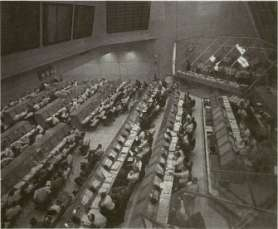
Computers and their end product devised for Saturn V — automatic checkout of flight hardware — were much in evidence at the Kennedy Space Center. This view of the control center, with row on row of computer consoles, is only one portion of the system.
FROM CHECKOUT TO LAUNCH
each of these individuals came to the language problem from a different background and with a different goal in mind. Melding two such disciplines together was not always an easy task. Earlier in the Saturn program, Marshall Space Flight Center had developed two separate languages for computer operations—one for stage testing and one for launch site operations. This situation obviously created communications problems and was complicated by the fact that each of the stage manufacturers was also using its own computer language based on the particular requirements of its own test designers and engineers. A further entanglement involved the rapid evolution of checkout programs. Test engineers were putting new demands on the computers, and these new demands as well as the style of language had to be communicated to the programmer. To arrive at an appropriate language, either the test engineer had to learn more about programming, or the programmer had to learn more about test engineering. The solution to this dilemma was ATOLL, an acronym for Acceptance Test or Launch Language, designed to bridge many of the gaps between the test engineer, the designer of the stage, and the computer programmer. Originating in late 1963, ATOLL eased confusion and helped to normalize the many functions of automatic test and checkout encountered at the manufacturer's plant, during static firing, and during operations at the launch site. 4
In a typical test sequence a number of things happened. For example, the test engineer inaugurated the program by typing in the instructions on his console. The computer responded by reading out for the test engineer the status of the selected program. When the program was ready for running, this was indicated on the appropriate panel of the computer. The information appeared in English on either the cathode tube of the program display or on a video data terminal. Perhaps the display also included numerous options for the engineer, depending on which portions of the test he wanted to pursue at the time. If some selected part of the test required a further breakdown for the engineer's consideration, instructions could also be typed in, and the computer would respond on the display tube. When either programming difficulties or hardware problems cropped up, the computer might give the test engineer a choice of several actions: terminate the test, go back to a prior enumerated step, proceed, or some other option. Further, in the process of running the test, all the results were shown on engineering display consoles and recorded both in print and on magnetic tape. These readouts were stored and, in some instances, were correlated into previous test operations for checking at some later date. Thereafter, if an anomaly occurred, it was possible to run a check through the computer all the way back to the machine shop floor to see what discrepancies or difficulties might have occurred in the test conditions, hardware, or in the manufacturing process itself. 5
STAGES TO SATURN
Prior to the static-firing program (and before any mating of the separate stages occurred), each Saturn stage had to pass checkout requirements. Although the final test goals were similar for each stage, the differences between stages required a "custom-tailored" test for each one. Designing a checkout system to satisfy the unique requirements of the instrument unit and each stage, and also meet integrated vehicle requirements, became what MSFC called a "major task." The Marshall group drew on its experience with the Redstone, Jupiter, Mercury, Saturn I, and other rocket programs in establishing the checkout organization. 6
The decision to use automated stage checkout for the Saturn program rested on several factors. D. M. Schmidt, of MSFC's Quality and Reliability Assurance Laboratory, summarized them at a technical conference in New York City in 1965:
• High reliability is needed; vehicle is expensive and is man-rated.
• Truly integrated designs of stages and support equipment would reduce the number of operational problems.
• Human errors and human slowness must be improved upon.
• An engineering approach is feasible throughout design, production and test, military restraints being absent.
• The time scheduled for checkout must be used more effectively than on previous programs.
• The volume of technical data to be measured and handled is extremely large; each flight stage alone has hundreds of measuring devices aboard (perhaps as high as 1000).
• All data must be transmitted long distances on a limited number of channels. Launch pads are far from control consoles. Stage checkout must meet launch needs.
• Test and launch data must be retrieved, stored, and made available to many organizations.
• Automation increases the powers of human operators to deal with complex situations and frees them for decision-making.
• Data-handling needs are many and varied: accuracy of measurements and transmission, versatility of equipment, speed of operation, operating-time recording, failure histories, data comparisons. 7
For the Saturn program, checkout included two distinct phases. "Stage checkout" included test sequences conducted on the individual stage during manufacturing and static firing prior to NASA's acceptance for assembly into the launch vehicle. "Vehicle checkout" included tests on the assembled launch vehicle at the launch site. A complete checkout of the stack was deemed necessary because an individual stage might function perfectly in tests that simulated interaction with other stages, but not function as well when linked together physically in the stack.
FROM CHECKOUT TO LAUNCH
Marshall's main interest was the actual stage checkout, with responsibility for final launch vehicle checkout resting with Kennedy Space Center. Originally, NASA planners envisioned repeating the stage checkout after the delivery of each stage to Cape Kennedy, but it became apparent that this scheme compromised the time and resources required for final checkout and launch. Therefore each stage received final checkout before transport to the launch site. The procedure not only made it easier to accomplish the final checkout and launch, but enabled MSFC and the contractors to deal more efficiently with problem areas at the stage test facility (where specialized personnel and equipment were present). This concept paid off on the first three Saturn V vehicles when stage checkouts uncovered 40 serious defects; these flaws would have gone undetected had the stage checkout depended only on procedures and facilities available at the launch site. 8
Each booster stage was subjected to a post-manufacturing checkout, a checkout prior to static-firing tests, and a post-static-firing checkout. Static firing, the most dramatic test, tested the propulsion systems during actual ignition and operation. Checkout featured a "building-block" sequence, common to all stages, with variations as necessary for an individual stage. A typical sequence began with an independent electrical system test and was followed by a simplified rundown of the launch sequence. Next, other systems were run in succession; guidance and control system tests; a second launch sequence run with these and other electrical and propulsion systems tested; completion of ancillary system tests; an all-systems test; and, finally, a "simulated flight" test, including ignition and a duration burn. 9
The Saturn stages and the associated checkout equipment for each were developed simultaneously with the goal of an integrated design of the vehicle and its ground equipment. Some of the vehicle's mechanical equipment—such as sensing equipment for checkout of a number of items operated by fluid, as well as fluid management subsystems—did not lend themselves to checkout with digital computers. Design engineers succeeded in developing suitable checkout equipment for the electrically actuated and measured equipment so that the great majority of stage checkout tests would proceed automatically. The Saturn I vehicles offered the first experiences in stage checkout for Saturn class vehicles. Whereas the vehicle SA-1 required manual checkout, by the end of the Saturn series automatic equipment controlled over 50 percent of the tests. The automatic capability improved during the S-IB vehicle series, and checkout of the Saturn V stages, including the instrument unit (IU), was about 90 percent automated? 0
Checkout equipment for S-II and S-IVB stages of the Saturn V was developed by the stage contractors under the direction of MSFC. For the S-IC, Marshall collaborated with Boeing in developing the automated equipment, because the first S-IC stages were fabricated in MSFC shops
STAGES TO SATURN
at Huntsville. Boeing employees trained on the first two S-IC stages at Huntsville, then checked out later stages at Michoud. For the IU, checkout equipment previously developed by Marshall for the Saturn I was utilized, with IBM in Huntsville assuming responsibility for later work. The S-IC stage and the IU checkout operations both utilized the RCA-110A digital computer. NASA had already decided to use the RCA-110A for launch control, so the interfaces with the S-IC and IU were compatible. In contrast, the S-II and S-IVB stages relied on the CDC-924A computer, supplied by Control Data Corporation. The design of this computer offered added flexibility for checkout of the two upper stages, which utilized liquid hydrogen as fuel, mounted the J-2 engine, ignited at high altitude, and included several unique design features. Also the CDC-924A, which was based on later-generation computer technology, offered added test functions. 11 The Saturn program also relied heavily on the "Saturn V Systems Breadboard," a facility located at MSFC. The breadboard incorporated both mechanical equipment and electronic simulation and was used for wringing out the checkout procedures and launch control operations at the Cape. 12
Not everyone was happy about the escalating preeminence of automation. Many of Douglas's own people opposed the ubiquitous computer. "In fact," an automation expert at Douglas admitted, "the company was surprised to find that its equipment took the automation more readily than did its engineers." 1
In the pre-Saturn days of rocket and missile operations, many checkout procedures were performed manually and worked well with complex vehicles like the Thor-Delta. Douglas engineers used manual checkout techniques for the earliest S-IV stages; pre-checkout, acceptance firing, and post-checkout required a total of 1200 hours per stage. Veteran "switch flippers," who for so long scanned gauges and dials, flipping the right switch in a critical situation, had been vital links in the overall loop. They were now replaced by ranks of gray-enameled computers. For checkout procedures on the Saturn V third stage, the S-IVB, fully automated techniques replaced the manual checkout for the first time. Although the magnitude of testing rose by 40 percent per stage, the new automated systems reduced the checkout time to about 500 hours total. H. E. Bauer clearly remembered the occasion when men and the new machines first confronted each other. "One seasoned switch flipper came into the blockhouse after the equipment was installed; he watched the blinking lights, the scanners, the recorders—everything was working automatically, heaving out wide and endless runs of data printouts. . . ." The man balefully surveyed the mechanically throbbing interloper and growled, "It's the Gray Puke!" It was not an isolated reaction. As Bauer recalls, the ghastly name stuck and became part of the permanent lexicon associated with the S-IVB stage.
Even with mechanical drones like the Gray Puke usurping the
FROM CHECKOUT TO LAUNCH
human role, the man-behind-the-machine could still display some semblance of individuality. Consider, for example, the case of the petulant computer-printer—when the machine apparently took umbrage during the automatic checkout sequence in preparation for an acceptance firing. The moment of truth for the test arrived—the signal to fire. After uncounted hours of preparation, hundreds of workers now stood by to observe the climactic moment of ignition. In the crowded blockhouse, all eyes focused on the rows of computers and monitor screens displaying their last fragments of information. Finally, the test conductor typed in his "request" to start the terminal countdown for static firing. The computer whirred, and the automatic typewriter responded with a singular reply, "Say please." Startled, the test conductor concluded he had made a typing error, and repeated his original message more carefully. The balky computer was not to be denied. "Say please," it insisted. At this point the crowd in the blockhouse began stirring restlessly. The loaded S-IVB, readied for firing, remained poised nearby with thousands of gallons of liquid oxygen and liquid hydrogen primed for detonation. People were getting tense. Reasonably certain he was only working against a faulty firing tape, the test conductor quickly decided to make one more try, rather than put it into discard and risk more precious time to put a replacement tape into operation. So once more, he entered into the machine his humble request to fire, with a polite notation at the end: "please." This time, there was no problem. "This is your programmer," the machine chattered back, "wishing you good luck." And with a roar, the rocket ignited. 14
GUIDANCE AND CONTROL
With computer data accumulated for each stage and subsystem, the collected information was not only utilized for vehicle checkout at the Cape, but also for the launch and for guidance and control during the mission.
After years of research and development on the individual stages, involving thousands of workers and millions of man-hours, most of the responsibility for the six-hour flight of a Saturn V devolved on a piece of equipment known as the instrument unit—the "IU." A thin, circular structure, only 1 meter high and 7.6 meters in diameter, the IU was sandwiched between the S-IVB stage and the command and service modules. Packed inside were the computers, gyroscopes, and assorted "black boxes" necessary to keep the launch vehicle properly functioning and on its course.
Historically, the problems of traveling successfully from point A to point B on the Earth's surface depended on some form of visual references, such as tall trees, mountains, or some other easily sighted
STAGES TO SATURN
landmark. Longer journeys overland, where familiar landmarks were unavailable, and extensive sea voyages, out of sight of any landmarks at all, came to rely on guidance instruments such as compasses and the astrolabe. Rocket vehicles, on the other hand, with their extremely high speeds, altitudes, and long-range capabilities, came to depend on advanced guidance systems coupled with control systems that were essentially automatic.
The Saturn rockets relied on inertial guidance, involving a rigid member within the vehicle. This member, an integral element of the guidance package, was oriented and held unchanging by means of gyro units, gimbal systems, and servomechanisms. Additional equipment tied into the inertial guidance unit contained all the data needed to sense the distance traveled by the vehicle and the deviations from the desired path and to control the vehicle in accordance with its computer memory. 15
The guidance and control techniques applied in the Saturn program involved many problems. Successful solutions were reached partly through new research and development and partly through the use of proven techniques and hardware adapted from existing systems. The Saturn digital computer and the data adapter stand out as new developments. The inertial platform, on the other hand, was a result of concepts and hardware worked out in the late 1930s and early 1940s in Germany.
Inertial guidance rested on the technology of precision gyroscopes. Gyroscope technology progressed considerably during World War I, based on requirements for controlling the gunfire of long-range naval guns at sea. During the 1920s and the 1930s, further development of gyroscopic systems involved aircraft applications, which included rate-of-turn indicators, the artificial horizon, and the directional gyro. Despite the remarkable advances in aviation guidance instruments for navigation and "blind flying," instrument precision and response rates were inadequate for application in high-speed rocket vehicles. New developments were required in gimbal systems, servomechanisms, electronics, computers, and other equipment leading to inertial guidance systems for rockets and missiles. An intensive effort to perfect such hardware occurred in the late 1930s and during World War II, particularly through the work accomplished in missile research by the von Braun team in Germany. C. Stark Draper, a leading postwar specialist in the field of guidance and control, acknowledged the contributions of the von Braun team in no uncertain terms. "Beyond doubt," he declared, "credit for the realization of inertial guidance belongs to the Peenemuende group of German scientists who developed the V-2 ballistic rocket missile."
In the A-4 missile (the V-2), a pair of gyros was used in a guidance system known as the LEV-3; one free gyro controlled roll and yaw, one controlled pitch, and a tilt program put the missile into the proper angular attitude after its vertical launch. The LEV-3 employed a gyro-type accelerometer as a propulsion cutoff system, the device being preset
FROM CHECKOUT TO LAUNCH
to cut off the engines when the missile reached a predetermined velocity. With this pair of two-degree-of-freedom gyros, the LEV-3 was a three-axis-stablized platform (an inertial guidance concept), the result of very high quality research and development in precision machinery, materials, advanced theory, and innovative design concepts. Moreover, the whole system was manufactured in quantity.
The LEV-3 was a milestone in the art of guidance and control for rockets; it established the basic design concepts for the inertial guidance concepts that followed during V-2 development in wartime Germany. 18 One of the most significant developments occurred through the work of Fritz Mueller, at Kreissel Geralte GMB. H. This was the SG-66, a three-axis platform with advanced accelerometers and integrators. Boasting much improved precision and accuracy, it was coming into production for use in German missile systems when the war ended. After the von Braun group moved to Huntsville, Mueller directed further refinements of advanced V-2 guidance concepts developed at Peenemuende which ultimately resulted in a far superior piece of equipment. The new variant featured an air-bearing system for three single-degree-of-freedom gyros integrated in a gimbal-ring structure; this yielded a three-axis stabilized platform. Further work by other Peenemuende veterans and an analog guidance computer devised with American researchers at the Redstone Arsenal culminated in the ST-80, the stabilized platform, inertial guidance system installed in the Army's 1954 Redstone missile. Prior to launch, the intended flight profile was fed into the missile's computer guidance program. During flight the ST-80 combined with the guidance computer kept the missile on its preplanned trajectory with no external guidance influences. 19
The ST-80 of the Redstone evolved into Jupiter's ST-90 (1957); both were turned over to the Ford Instrument Company for manufacture. When the Saturn I began to evolve, the Army Ballistic Missile Agency (ABMA) guidelines called for the use of proven and available hardware wherever possible. For example, the early Saturns incorporated the ST-90 stabilized platform with an IBM computer, the ASC-15 model, adapted from the equipment used on the uprated Titan II. 20 At a later date, as other vehicle test milestones were passed, a different guidance and control unit was proposed. This new unit, the ST-124, was an improved inertial guidance platform intended for the Saturn V's complex and long-term orbital mission.
EVOLUTION OF THE IU
The instrument unit (IU) evolved as an "in-house" project at Marshall Space Flight Center and was based on the guidance expertise
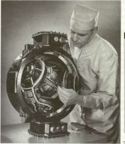
PLATFORM GIMBAl CONFIGURATION
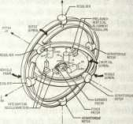
The ST-124 inertial guidance platform is given a technical check (left); above is a schematic of its systems.
accumulated from the V-2, the Redstone, and subsequent vehicles developed by the von Braun team.
Beginning in 1958, work on the IU was concurrent with the Saturn I. On 15 June 1961, the mockup of the IU was completed at Huntsville and scheduled to fly in the Block II series of the Saturn launch vehicles. 21 For the Block I vehicles with dummy upper stages, guidance and control equipment was packaged in canisters located at various points in the adapter area atop the S-l first stage of the Saturn I. This equipment included telemetry, tracking, and other components, such as the ST-90 guidance platform and a guidance signal processor. Plans called for an additional canister to carry the ST-124 platform as a "passenger," thus beginning its sequential tests and qualification as the active guidance component for later Saturn I, Saturn IB, and Saturn V flights.
MSFC intended to make the ST-124 an increasingly active system for SA-5 and subsequent vehicles and to link it with an IBM computer. SA-5 was the first of the Block II vehicles of the Saturn I series. It featured a live S-IV upper stage and a separate vehicle segment, located above the S-IV, for guidance and control (to be known as the IU). Standing about 1.5 meters high, the cylindrical IU section contained four package bays that had been shaped in the form of large tubes and cruciformly joined in the center. This new structural element was
FROM CHECKOUT TO LAUNCH
designed for greater flexibility and permitted modifications between launches, if so dictated by results of the previous launch and changing test requirements. The four tubular segments contained the ST-90, the ST-124, the telemetry equipment, and the power and control package. 22 With the flight of SA-9, the Saturn I vehicles began carrying a new type of instrument unit, which resembled the equipment later applied in the Saturn IB and Saturn V flights. In the earlier design, the tubular package bays were pressurized and surrounded by an inert gas as a means of environmental control to cope with the problems of heat. In later instrument unit design, however, equipment was mounted on the walls of the cylindrical segment. With this design the cylindrical unit was not pressurized, and the external style of environmental control by inert gas gave way to a revised system. Elimination of the pressurized tubular sections and other simplifications not only reduced the weight of the instrument unit, but also reduced the height of the segment by half, thereby improving the structural and flight characteristics of the late Block II launch vehicles. Introduction of the improved instrument unit marked growing participation of contractors, including the Bendix Corporation, for the ST-124, and IBM, who assumed increasing responsibil-
• r i • i • i 93
ity tor the instrument unit segment and various guidance components.
The major role of IBM as the principal manufacturer for the instrument unit began in February 1964. The company was named prime contractor for both the Saturn IB and Saturn V versions of the IU and was responsible for building, testing, and shipping the instrument unit to Cape Kennedy. With MSFC retaining primary responsibility for the buildup of the first four units and the first four flights of the Saturn IB, IBM was able to ease into its work. For the first instrument unit, 80 percent of the hardware was classed as government-furnished equipment; this was reduced to 10 percent when IBM took over for the fifth unit. The instrument unit for the Saturn V was essentially the same as the model for the Saturn IB, because the evolutionary process of development and manufacturing was intended to give the Saturn V a proven piece of equipment with as few changes as possible. 24
Unlike most major launch vehicle components, which were manufactured elsewhere around the country, the instrument unit was produced in Huntsville. IBM made a major commitment in setting up complete research and development facilities, engineering offices, and production facilities in the city's Research Park. Although the company started with only a sales office building in Huntsville in 1962 and originally assumed most of its work would be done in New York, the scope of work implied a need for new facilities, and IBM decided on a complex in Huntsville. By 1964, IBM completed a manufacturing building in Huntsville's Research Park, and the company site included four major buildings, representing a $14 million investment with a work force of 2000. Clinton H. Grace, the facility manager at Huntsville, was a
SATURN IB/V INSTRUMENT UNIT
MAJOR I.U.SYSTEMS
• GUIDANCE & CONTROL •ELECTRICAL •TELEMETRY 8 MEASURING
• RADIO FREQUENCY
• STRUCTURAL
• THERMAL CONTROL
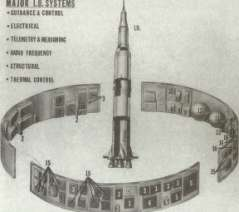
ENVIRONMCNTAl
ELECTRICAL POWER SYS. MEASURING SYS. CONTROL ACCELEROMETERS CONTROL COMPUTER SYS. EDS
RADAR ALTIMETER C-BAND RADAR .. AZUSASYS.
10. MINITRACK SYS.
11. ST-124-M PLATFORM
12. PLATFORM AIR SUPPLY
13. PLATFORM ELECTRONICS
14. GUIDANCE COMMAND SYS.
15. TELEMETRY SYS.
16. SWITCH SELECTOR
17. GUIDANCE COMPUTER
18. DATA ADAPTER
The instrument unit used in Saturn IB and Saturn V is shown in component detail in the drawing at left; below, left, in IBM's Hunts-ville facility, lUs are joined together and instrumented. Two of the key components in the IU are the launch vehicle digital computer (below, right) and the launch vehicle data adapter (bottom, left). At bottom right, this completed IU is undergoing rigorous checkout and test before shipment to KSC. Both IBM and MSFC engineers are monitoring the checkout.
BIBS
CAPACITOR PACKAGE ELAPSED TIME METER PURGING VALVE
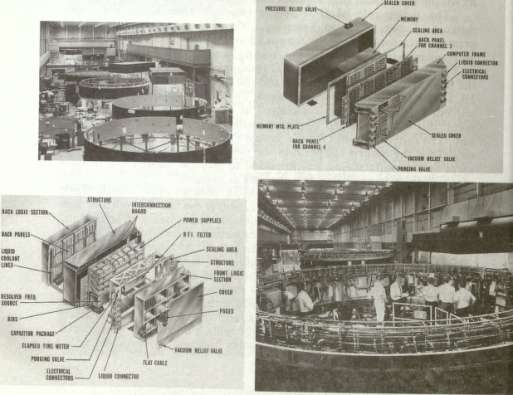
FROM CHECKOUT TO LAUNCH
dynamic force in both the organization and buildup of the IBM complex and won high praise from Wernher von Braun. Speaking at the dedication of the IBM facility in 1965, von Braun commented, "In this project, a saying has developed at Marshall Center, 'When you're in trouble, say 'Grace'—and Grace will take care of your problems.' " 25
The ground rules for the design, research, and development of the IU came out of MSFC, and these concepts carried over into the production models delivered by IBM. With cost constraints and tight schedules limiting the number of test flights, the number of measurements for each flight was expected to be quite high and to vary considerably from one flight to another. For this reason, flexibility for the instrument unit had a high priority and designers emphasized a modular approach as means to provide both flexibility and ease of servicing. Another strongly emphasized feature was reliability; a key factor, particularly because the Saturn program was geared to manned launches. In addition, liability was enforced by the high cost of each vehicle and limited test flights, which naturally produces a reluctance to fly exotic, untried, hardware. As James T. Powell, of Marshall's Astrionics Laboratory stressed, "We simply cannot afford the time or money*to launch additional vehicles to obtain data lost by instrumentation equipment failures. This has led to a rather conservative approach to system design." Some innovations, such as new modulation techniques or microminiaturization, might turn out to be "equivalent in importance to the invention of the wheel," Powell remarked, but would not be used in the Saturn program until they had undeniably demonstrated their operational reliability. 26 Nevertheless, the scope of the missions for Saturn V required additional changes and improvements. These alterations were introduced and checked out during the Saturn IB series, which not only carried the same basic instrument unit as the Saturn V but also involved manned launches and carried the similar S-IVB upper stage.
THE BRAIN AND ITS PARTS
Categorized as the "brain" and "nerve center" by the MSFC Astrionics Laboratory, the IU, with its modular construction, facilitated the changing of components and computer programs, without major modifications, for different missions. The basic functions of the IU included guidance and control during all phases of flight; command and sequence of vehicle functions, including engine cutoff and separation of the stages; insertion into orbit; and relay of data on vehicle position, vehicle functions, and other information to ground stations. In the case of the Saturn V, the IU also functioned in (1) the transfer of the S-IVB, the IU, and the command and service modules into the lunar transfer trajectory; (2) the stabilization during transposition and docking; and (3) the
STAGES TO SATURN
maneuvers to clear the S-IVB and IU from the flight path of the GSM on its route to the moon. 27 The IU itself was viewed as five major systems: structural, guidance and control, electrical, instrumentation, and environmental control.
The cylindrical IU structure did more than carry meters of cables, black boxes, and other miscellaneous paraphernalia; it was a load-bearing structure as well, with three major rocket stages stacked beneath it and thousands of kilograms of spacecraft, lunar landing module (and three astronauts) to support above it. The process of assembly of the IU began with three curved (120°) structural segments made of thin aluminum sheets bonded over an aluminum honeycomb core (approximately equal to the thickness of a bar of soap). In joining the three segments together, workers used highly accurate theodolites, much like a surveyor's transit, to align the three segments in a precise circle. Technicians joined the segments with precision-machined splice plates and affixed aluminum alloy channel rings for surface mating of both the S-IVB below and the payload above. 28
The key items for guidance and control included the ST-124 stabilized platform, the launch vehicle digital computer, and the launch vehicle data adapter. Produced by the Navigation and Control Division of the Bendix Corporation, the ST-124 consisted of a three-degrees-of-freedom inertial platform. With a diameter of 53 centimeters and a weight of 52 kilograms, the platform's structural members and most of its components were fabricated of beryllium, an extremely lightweight space-age metal. Although difficult to work with, beryllium offered significant weight savings and provided good stability over a wide temperature range. To reduce errors in sensing attitude and velocity, designers cut friction to a minimum in the platform gyros and acceler-ometers by floating the bearings on a thin film of dry nitrogen; pressure, temperature, and rate of flow were controlled from a reservoir in the IU. The carefully controlled alignment of the ST-124 platform did not take place until the final events of the launch countdown. The procedure called for a precisely sited theodolite not far from the launch pad to aim a beam of light through a small opening in the IU high above the ground. The beam passed through a small window in the guidance platform where a pair of platform prisms reflected the beam back to the theodolite. Coated to work with two different wavelengths, the prisms aided in aligning the platform to its launch azimuth; when proper alignment was achieved, the acquisition light signal notified the mission control center. 29
All the carefully engineered complexities of the Saturn guidance and control system were not fully employed during the first-stage burn. Although the ST-124 was released from its Earth-fixed reference to a space-fixed reference five seconds before liftoff and was supplying velocity and attitude data to the guidance computer during the first-stage burn, the vehicle did not require an active guidance system during the
FROM CHECKOUT TO LAUNCH
boost phase. In ascent through the atmosphere, both the Saturn IB and Saturn V were subject to possible sudden stresses from gusts, wind shear, and jet streams. If the guidance computer, acting on signals from the stabilized platform, attempted to generate compensation maneuvers during such turbulence, the added stress forces from the powerful engines as they went through extensive gimbaling motions might cause the rocket to break up. So, during the first-stage burn, the rocket flew according to a predetermined program stored in its guidance computer. If the vehicle was forced off its predetermined path, the ST-124 sensed this displacement and fed the data into the computer for later retrieval. During the second- and third-stage burns, the stored data were run through the computer and into the active guidance and control system to put the rocket back on course. 30
Information on yaw, pitch, roll, and acceleration provided by the ST-124, as well as inputs from other electrical systems, were collectively assimilated and processed by the digital computer and the data adapter to give the rocket an optimum performance. There was a division of labor involved. The computer took information and provided commands such as orbital checkout of the vehicle. The adapter performed as an input-output unit in conjunction with the digital computer, interfacing with nearly all units of the astrionics system. Its digital section "buffered" the digital quantities, and an analog section converted analog to digital form and back again. The IU equipment for Saturn V was only slightly heavier and larger than that for the Saturn I, but its computer-data adapter combination was three times faster, possessed four times the storage capacity, and was far more reliable. Although there were seven times the number of electronic components in the Saturn V versions, their total power consumption was 100 watts less than in the Saturn I. Furthermore, the 460 000-bit storage design could be easily doubled by plugging in additional memory modules. The following table offers a quick comparison: 31
Equipment Comparison (Saturn I and V Computer/Data Adapter Subsystems)
These statistical improvements do more than illustrate the significant changes in the IU for the Saturn IB/V, as compared with the Saturn
STAGES TO SATURN
I. They also reveal that, although original guidelines called for as little new equipment as possible, the nature of manned missions and the quest for reliability called for advanced design techniques. To meet the stringent reliability and operational requirements and also remain within the rigid size and weight limitations, four new design concepts were incorporated into the computer: a duplex memory system, unit logic devices, triple modular redundancy, and a liquid-cooled magnesium-lithium chassis. 32
The duplex memory system incorporated two separate sets of memory systems that operated in harmony during critical phases of the mission. This not only reduced the chances of system failure but operated so that one memory system could correct the other if intermittent failure should occur. The system consisted of six modules operating as pairs of duplex memories, each with 4096 computer words of 28 bits and designed to accept two additional modules for special mission requirements. The unit logic devices featured microminiature circuitry, resulting in a smaller, lighter system, having seven times more components than earlier computers while operating at three times the speed. Typically, each unit logic device was produced as a "wafer," 7.6 millimeters square and 0.71 millimeters thick. A total of 8918 such wafers were mounted on dozens of "pages," about 7.6 centimeters square, in the computer.
Further, the IU featured the first computer application where all critical circuits in both the computer and data adapter were triplicated— triple modular redundancy—giving near-ultimate operative reliability. Designers selected seven functional sections where catastrophic failure might occur but, for reasons of reliability, could not be permitted to occur. Each selected section was then placed in three identical but independent logic channels. Problems were presented to each module simultaneously, and the results of each, independently derived, went to a majority-rule voter circuit. Any dissenting "vote" was discarded as an error, and the only signal passed along by the voter circuit consisted of the identical signals from two of the modules. Voting disagreements did not appreciably slow the system: a worst-case voting delay would tie up the computer for only 100 nanoseconds (billionths of a second). Moreover, the computer unit, occupying 0.6 cubic meter and weighing 35 kilograms, could subtract and add (in 82 microseconds) while simultaneously dividing and multiplying (in 328 microseconds). 33
The unusually light weight of the computer was achieved by the use of a magnesium-lithium alloy chassis, the first application of this alloy in structural fabrication for an electronics application. Weight being extremely costly in the upper stages of a booster, MSEC used the magnesium-lithium alloy construction, along with an integral cooling system, to save 29 kilograms. In selecting a suitable material, designers turned down the
FROM CHECKOUT TO LAUNCH
even lighter beryllium because of toxicity and technical difficulties in machining and boring. Magnesium-lithium was still quite light (25 percent less than conventional magnesium and 50 percent less than aluminum) and possessed a very high weight-to-strength ratio, good thermal qualities for operation in space, and minimal transfer of mechanical vibration.
In addition to sharing with the computer some similarities in the fabrication and production of the chassis, the data adapter incorporated concepts similar to those of the computer's unit logic devices and triple modular redundancy. The basic function of the data adapter was that of a "gateway*' to the computer for all elements of the Saturn guidance system. It received inputs from the ground control computer, radio command channel, telemetry, multifarious communications from within the vehicle, the inertial guidance platform, and the flight control computer. For example, analog inputs from various sensors were taken by the data adapter and digitized for the computer. Computer outputs were relayed back to the data adapter for conversion to analog signals as required. If the signals involved control commands, they went through the analog flight control computer and were combined with additional signals from the rate gyros. The resulting output included commands to activate the engine gimbal systems, thereby changing the direction of their thrust and the attitude of the launch vehicle.
While some IU equipment maintained the rocket in flight, other systems were involved in communications, tracking the booster in trajectory and orbit, and transmitting reams of data back to the ground. Several tracking and command systems were employed: an Azusa system measured slant range and vehicle direction in relation to ground stations; a C-band radar transponder aided radar ground stations in measuring azimuth, elevation, and range; and a command and communications system permitted updating of the computer, performance of tests, addition or deletion of certain messages, and recall of certain portions of the computer memory bank. During launch and orbital phases, transducers throughout the vehicle reported information on vibrations, pressures, temperatures, and various operations; the measuring and telemetry system transmitted these data to ground stations. This not only furnished real-time data on vehicle performance during the mission but provided a means of checkout for succeeding events, verified commands to the vehicle, and created a bank of data for later analysis of the vehicle's overall performance. 35
The power to run this complex electronic equipment emanated from four 28-volt DC batteries, which consisted of special distributors and regulators for both low-voltage components and higher currents for the ST-124 inertial platform. The electrical system also included the emergency detection network to analyze vehicle malfunctions. Depending
STAGES TO SATURN
on the seriousness of the problem, the emergency detection network either responded with an automatic abort sequence or gave the astronaut crew and NASA flight controllers time to assess the situation.
Operation of the IU equipment generated considerable amounts of heat which had to be transferred away from the components and dissipated into space. This was the function of the environmental control system. It consisted of cold plates (as mounting surfaces for most of the electronic gear), and integral coolant passages for thermal control of (1) the computer, (2) the data adapter, (3) the flight control computer, and (4) the ST-124 platform. Heat was dissipated to a coolant mixture, similar to the antifreeze used in a car (60 percent methanol, 40 percent water), that was pumped through the 16 cold plates and the integral coolant passages. An additional 16 cold plates, located in the upper skirt section of the S-IVB, were also connected to the lU's coolant pumping system. Warmed coolant was pumped through a sublimator to reduce its temperature before it was routed back through the coolant passages and cold plates. A comparatively simple device, the sublimator consisted of a water supply to a porous plate with ice frozen in the pores, because the pores were exposed to the frigid environment of space. In the course of passage through the sublimator, heat from the coolant was transferred to the plate, the ice was converted to water vapor, and the water vapor was dissipated into space. 36
QUALITY CONTROL AND TESTING
To ensure trouble-free operation of the equipment in the IU, IBM established tightly controlled preparation and installation conditions during assembly of the IU. Tubing, valves, fittings, components, and subassemblies moved in a steady steam through various "clean-room" environments for checks and cleansing to establish minimums of contamination. MSFC specifications for the clean rooms varied, with increasing stringency ranging from class I to class IV rooms; this successively reflected greater requirements for clothing worn by personnel, temperature, humidity, and particle counts. For most clean-room operations, specifications allowed no particles greater than 175 microns in the air, although examination and qualification of some critical items established a limit of 20 microns—about the diameter of a human hair—and a count of no more than 6 per cubic meter. Cleaning for super-critical items included laminar flow work benches, de-ionized water, various combination of solvents, and ultrasonic systems. Once parts and assemblies were cleaned and ready for installation, there was the problem of transferring them from the clean-room environment to the "dirtier" area of IU assembly. Since the IU was too large to bring into the clean rooms, IBM
FROM CHECKOUT TO LAUNCH
decided to take the clean-room environment to the IU instead. The company used a trio of mobile clean rooms on casters, which had been hung with heavy vinyl curtain walls and equipped with air filters and blowers to maintain class IV working conditions. 37
Installation of equipment within the IU was accompanied by a series of checkout operations. Beginning with delivery of individual components, IBM personnel checked them against equipment specification drawings and subjected them to acceptance tests, followed by functional checks as items were mounted in the IU. As the various systems of the IU began to shape up, components and systems were checked until the IU was complete. Afterward, up to eight weeks of exhaustive simulation tests were conducted; these simulations included preflight ground checkouts and others for liftoff, trajectory, and orbit. When the test and simulation phase was complete, the IU was ready for shipment. Critical components, such as the ST-124, the computer, and the data adapter were taken out and packaged separately, then flown along with the IU to the Cape. At the Cape, these components were reassembled and rechecked before the IU was stacked into the rest of the vehicle and prepared for complete preflight checkout. 38
Despite the great emphasis on clean room facilities and spotless surroundings, IBM on one occasion finished production of an IU on the deck of a barge while floating down the Tennessee and Mississippi rivers. During 1965, work on the IU fell behind as a result of changes in instrumentation. The schedule for "stacking" the first Saturn IB (AS-201) for launch early in 1966 was apparently going to slip badly unless work on the IU could be accelerated. Marshall executives pressured their own IU project managers by demanding to know what they were going to do to make the launch date. Luther Powell and Sidney Sweat, from the IU project office at MSFC, brainstormed the situation and proposed a way to make up time. At that point, there was no aircraft large enough to deliver the IU by air. Instead,.the IU was scheduled to be carried to the Cape via a barge down the Tennessee and Mississippi rivers, one of the most time-consuming elements in the IU delivery schedule.
Powell and Sweat proposed finishing the IU while enroute aboard the barge and submitted their idea to their IBM counterparts, who agreed with the unlikely proposal. Because the enclosed barge was equipped with internal environmental controls anyhow, it was no great problem to set up a workable clean-room atmosphere by rigging a series of heavy plastic shrouds for additional environmental control inside the barge canopy. Marshall and IBM specialists agreed on specific jobs to be done on the barge so that no critical areas or hardware would be subject to environmental degradation during the trip. With detailed work schedules set up, arrangements were made for delivery of key parts and supplies at designated ports along the river. In case of unanticipated
STAGES TO SATURN
needs, constant radio contact with MSFC permitted instantaneous dispatch of a light plane with emergency deliveries to any nearby airport; there, a government truck could pick them up and deliver them.
The unusual voyage worked. The IU was complete by the time it reached New Orleans. The most serious problems proved to be the physical condition of the traveling IU working team. Despite 16—18 hour workdays, the meals concocted by the barge's chef produced a chubbier group of electronics specialists by the end of the trip. 39
Barge trips being the exception, an intensive effort in quality control extended to the fabricating and manufacturing process and encompassed the subcontractors as well. In one instance, IBM began having leakage problems with the manifolds carrying the coolant of the environmental control system. On IU-204, engineers finally decided to restudy the whole process, since IU-204 was to be on a manned launch of the Saturn IB. Manifolds on other lUs in production were also removed, because these too were to be used on man-rated vehicles. The subcontractor, the Solar Division of International Harvester, had originally dealt with the frustrating problems of welding the aluminum alloy. During a thorough review of the procedure, Solar found that only minor variances in the use of the welding fixtures created the difficulties and thereafter imposed even stricter procedures for this crucial operation. 40 In spite of the constant theme of using proven hardware and systems, the different requirements of the Saturn program called forth some new equipment and attendant "teething" problems. Not infrequently, IBM sent delegations to vendors and subcontractors to help work out problems in quality control, welding, and soldering. 41 In coping with these situations, IBM also called on MSFC technicians for assistance. A particularly dramatic instance occurred during the summer of 1967, when MSFC discovered cracks in the solder joints of the flight computer for IU-502, and IBM simultaneously discovered the same problem on IU-503. The discovery was unsettling for two reasons. In the first place, the units had already been man-rated and qualified for flight; the soldering problem should not have occurred. Second, the same kind of unit was already placed in vehicle AS-501, which was at Cape Kennedy being readied for the first launch of a Saturn V later in the year. Calling from Huntsville to NASA's Apollo Program Office, MSFC's Chief of Industrial Operations, Edmund O'Connor, warned Phillips in Washington: "Right now there is no impact, but this is potentially serious." It was decided to continue the checkout of AS-501 at the Cape, while sending a spare computer to the manufacturer, Electronics Communications Incorporated, for teardown, inspection, and rework of many of the solder joints. In this operation, technicians used a technique worked out by MSFC personnel in collaboration with their counterparts at the vendor's plant. 42
FROM CHECKOUT TO LAUNCH
STAGE SEPARATION AND ORDNANCE
For a Saturn V launch, the vehicle really began "thinking on its own" five seconds before liftoff when the IU was activated. The vehicle's control system first executed a series of time-programmed attitude maneuvers. After rising vertically for about 12 seconds, the Ill's computer used stored roll and pitch commands to activate the gimbaled engines, thereby rolling the huge rocket to a proper flight azimuth and, at the same time, pitching it to the prescribed angle of attack for the first-stage boost. When the IU received a signal that the propellant level in the S-IC fuel tank had reached a specified point, it initiated commands for first-stage engine cutoff, followed by stage separation. Soon after the start of second-stage (S-II) ignition, the vehicle was controlled by a concept called "path adaptive guidance," which put the rocket on a trajectory that would use the propellants efficiently. About once every two seconds, the computer checked the vehicle's current position and flight conditions, comparing it with the optimum situation desired at the end of powered flight (altitude, velocity, residual propellants, etc.). As required, the IU generated correction signals from the computer through the data adapter to the analog flight control computer, which then issued appropriate gimbal commands to the engines. Engine cutoff and stage separation of the S-II from the S-IVB occurred when the IU sensed predetermined propellant levels. Because the vehicle had reached its approximate orbital altitude by this time, the S-IVB ignition and burn were fairly short—-just enough time to ensure altitude and speed for a secure parking orbit. 43
If it became necessary to abort the mission, each Saturn carried a propellant dispersion system (PDS). This euphemism referred to a destruct mechanism to terminate the flight of any stage of the vehicle after the astronaut crew had separated from the rocket. The PDS system complied with regulations established by the officials of the Air Force Eastern Test Range and was under the control of the range safety officer, who could end the flight if the vehicle wandered beyond the prescribed limits of the flight path or otherwise became a safety hazard. A radio frequency unit received, decoded, and controlled the PDS commands, and an ordnance train demolished the stage or stages by rupturing the propellant tanks. The ordnance train included initiator assemblies and flexible linear-shaped charges situated in strategic locations to rip open the tanks after engine cutoff, spilling the propellants in a pattern to minimize their mixing during the process. 44
The Saturn rockets had other special ordnance requirements for stage separation and the use of retrorockets to ensure that the forward inertia of the lower stage after separation did not carry it into the stage
STAGES TO SATURN
ahead. The IU contained the program for arming and firing the ordnance systems both for stage separation and for triggering the retrorockets. The timing of the stage separation sequence was keyed to the rated thrust of each stage, which began to fall off as the propellants reached depletion. The stages were separated when an explosive device around the circumference of the vehicle severed a tension strap, thereby allowing the appropriate stage separation sequence to take place. As the retrorockets quickly pushed the spent stage backward, the next live stage continued in a short coasting trajectory to make sure adequate distance separated it from its predecessor and to resettle the propellants before engine ignition. 45 To decelerate spent stages and settle the propellants in each of the succeeding live stages, MSFC designers used a variety of rocket systems, including small solid-propellant motors and small liquid-propellant engines. The various models of the Saturn launch vehicle family actually carried more solid-propellant systems than liquid-propellant rocket engines: the Saturn I mounted 32 solid-propellant motors of various types; the Saturn IB mounted 31; and the Saturn V carried 22. 46 The Earth-orbital sequence of the S-IVB permitted the IU to compute reignition times continuously and take updated data from ground stations. With only one main engine for direct thrust control, the IU managed S-IVB roll, pitch, and yaw through its liquid propellant auxiliary propulsion system (APS). After final checks, the IU controlled the vehicle's entry into the translunar trajectory. A pair of jettisonable solid retrorockets and the APS together provided ullage control, followed by main-stage firing of the J-2 and engine cutoff when the IU reported that acceptable injection conditions had been achieved. Finally, when the spacecraft and lunar module disengaged from the S-IVB and IU, the IU and the third stage's APS units provided attitude stabilization for the transposition and docking maneuver. About 6.5 hours from liftoff, the tasks of the IU were finished. 47
SUMMARY: CHECKOUT, GUIDANCE, AND CONTROL
Development of checkout systems and the instrument unit reflected the same patterns as stage development. Despite attempts to rely on existing systems and equipment, the size and sophistication of the Saturn program required new development. New computer languages such as ATOLL were introduced to solve problems arising from the peculiarities of design, test, and several different contractors, each of whom had been using different computer languages. Automation of checkout and of static-firing tests of Saturn stages was a notable accomplishment, even if some test engineers were reluctant to surrender control to new, electronic masters.
FROM CHECKOUT TO LAUNCH
The instrument unit, using many theories and design features that originated in the wartime V-2 program in Germany, is an interesting example of technology transfer. Of course, the Saturn program itself generated several advanced ideas. The need to reduce weight stimulated new research into the use of beryllium and lithium-magnesium alloys; reliability and operational requirements stimulated new research in microminiature circuitry such as the triple modular redundancy.
Obviously, each contractor had a responsibility for managing its own respective engine, stage, or instrument unit. Overall management and coordination of these various elements was NASA's responsibility, a job carried out by the Marshall Space Flight Center, which also supervised the delivery of the Saturn's various parts to test sites and to Cape Kennedy for launch.
Coordination: Men and Machines
Management of the multifarious elements of the Saturn program entailed new tasks and concepts beyond the scope of any previous rocket program. As explained in chapter 9, MSFC's management was a dynamic process. Although rooted in the experience of the von Braun team, dating back to the 1930s, Saturn management responded to internal stimuli as well as external influences, including the prime contractors, NASA Headquarters, and other sources.
Almost last, but fat from least, the challenge of transporting rocket stages of exceptional size to test and launch sites posed equally unique complications. Logistics became a special management task. Chapter 10 explores some of the ramifications of moving the Saturn stages from points as far away as the Pacific coast to the launch pad at Cape Kennedy, with intermediate stops for static-firing tests and other checks.
Managing Saturn
In 1962, pausing to look back over a career in which he played a key role as a leader in rocket research, Wernher von Braun noted two significant factors of success. First, the group of German rocket experts, known as the von Braun team at NASA's Marshall Space Flight Center (MSFC), had been a "fluid, living organization," shaped by and responding to external forces. Second, in three decades of consistent activity at the forefront of rocket development, an activity conducted with a "singleness of purpose, we have had only one long-range objective: the continuous evolution of space flight," von Braun emphasized. "Ever since the days of the young Rakentenflugplatz Reinickendorf in the outskirts of Berlin in 1930, we have been obsessed by a passionate desire to make this dream come true." Despite the changes over the years in personnel, in geography, in nationality, and in bureaucracies, von Braun continued, "many of our methods have remained unchanged." 1 Many of these methods would persist during the Apollo-Saturn program and carry over into other phases of management at Marshall Space Flight Center.
No major Saturn component, whether engine, stage, or instrument unit, evolved without numerous—and continuous—problems. The persistence of various snarls is easily perceived by dipping at random in von Braun's "Weekly Notes" or "Daily Journal" from 1961 through 1970. Predicaments occurred everywhere and every day. Although complications in the Saturn program lingered, it is apparent that the most annoying problems tapered off during 1966. With increasing frequency, entries in the "Weekly Notes" and "Daily Journal" reported tests "successfully accomplished," results "well below red line," and hardware with "component qualification complete." 2
STAGES TO SATURN
The rising note of technological optimism in the Saturn program stemmed from the elaborate research, development, and test programs, followed by carefully controlled fabrication and manufacturing guidelines instituted by both NASA and contractors and managed by MSFC.
THE DIRECTOR OF MSFC
As Director of the new Marshall Space Flight Center in 1960, von Braun faced some immediate managerial challenges. The core of the staff had come from ABMA's Development Operations Division, which he had directed for the Army. But that division had been a research and development group depending on other ABM A offices for ancillary support and administrative services. After the transfer to NASA, the MSFC director had to develop an administrative as well as technical staff, in addition to providing procurement contracting, facilities engineering, and other support services. The von Braun team not only found itself in a civilian organization for the first time, but also the style of operations had changed. There were new responsibilities for numerous projects, as opposed to the ABM A experience of dealing with only one prime project at a time. 3
In spite of the increased responsiblities under the MSFC organization, management retained a distinctive in-house capability—what von Braun liked to call the "dirty hands" philosophy. This attitude, resulting from years of active work as a research and development group in Germany and from the Army arsenal concept of the ABM A days,
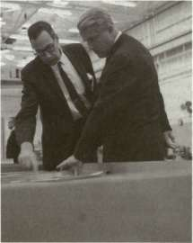
Wernher von Braun (right), Director of Marshall Space Flight Center, listens attentively to a briefing on metal forming techniques by Mathias Siebel, of MSFC's Manufacturing Engineering Laboratory.
MANAGING SATURN
provided a number of exceptionally strong laboratories and shops at the Huntsville facility. Managers and engineers were never very far from each other, and the relationship (and its elaboration) persisted as a key element in the success of MSFC's management of the Saturn program.
Technical competence was more than a catchword at Marshall; it was a way of life. As Director, von Braun somehow succeeded in keeping up with the paper work and budget reviews involving NASA and his own center, and at the same time, he kept an eye on minute technical details of the Saturn program. In 1967, for example, when von Braun received a weekly note on propulsion systems, he noticed that inlet pressures for the S-II center engine had been simulated at 1900 grams per square centimeter (27.0 pounds per square inch adiabatic) during J-2 engine tests. In the margin, von Braun jotted a note for one of the project engineers: "If I remember correctly, that would enable us to lower the LH 2 tank pressure in the SII by 2 psi. . .right? What are the SII people now actually doing?" 4
Throughout his tenure as Marshall's director, von Braun required such "Weekly Notes" from the laboratory chiefs and program managers, as well as from other personnel on an ad hoc basis when a problem was brewing. He was adamant about the length of these Weekly Notes, warning "notes exceeding one page will be returned for condensation." As the notes crossed von Braun's desk, he emphasized various points with check marks and underlined phrases and scribbled assorted messages in the margins: a compliment; a request for information; dismay; encouragement; and miscellaneous instructions. Reproduced copies went back to the originator with marginalia intact. Although curt and to the point, the replies were invariably personal, and occasionally tinged with humor. Informed of a possible strike by the janitorial contractor, von Braun responded, "Get me a broom! I'll sweep my own office." 5
At the innumerable-meetings attended by von Braun as chairman or participant, he displayed a remarkable ability to distill complex technical issues into terms that other participants could understand. Matt Urlaub, S-IC Program Manager, recalled technical presentations "that lost me in the first five (minutes)." After listening, von Braun would sum up the presentation in language clear to everyone. Yet von Braun consciously avoided dominating such sessions and attempted to bring out all opinions. These techniques contributed to genuine "team spirit." Konrad Dannenberg, a key manager and associate of von Braun since the days at Peenemuende, stressed the point: "You have to get all the people involved. Von Braun has a real good flair for that," he said. "Everyone, when he has a meeting with him, feels like the second most important man . . . and boy that really gives you a team spirit. Everyone is willing to do his best." Von Braun employed this trait effectively during tours of Marshall laboratories and contractor plants. He met with senior executives, but he also took a personal interest in what was happening on the
STAGES TO SATURN
shop floor—the problems, the progress, and the tools. Von Braun talked just as easily with the "top brass" as with the "tin-benders." These tours had great significance in improving morale, and von Braun made periodic tours intentionally. The tours were helpful to him too, in sensing the pace of the program as well as the nature of difficulties as they developed. 6
This concern for technical aspects was a hallmark of Marshall planning, and von Braun personified it. In the earliest phase of Saturn design at ABMA, Frank Williams, an ABMA veteran, remembered von Braun's consistently close involvement. "It was just a ball working," Williams said, "having him [von Braun] come down and literally pore over the drawing boards with you, and look at the performance and check the engineering work." Williams went on to say that when the Saturn V design was being established, von Braun was in the forefront, immersing himself in the whole vehicle: structures, systems, and missions. 7 This is not to say that only the Director and a small handful of top aides did the conceptual work and forced it through. One of the reasons for the Saturn success, Dannenberg emphasized, was "because a lot of real good down-to-earth planning was done at the beginning." Von Braun solicited advice and suggestions from workers in the shops, taking into account the realities of fabrication and manufacture as the design evolved. In this way, Dannenberg explained, von Braun avoided the pitfalls of having top-level managers making critical decisions among themselves and making assumptions about production that might not approach reality. 8
These tenets, among others, guided von Braun and his staff at Huntsville. Many other issues of organization, administration, and accountability had to be solved. The Saturn program was large, expensive, and involved complex contracts. According to one source, von Braun remarked that when he came into NASA, he knew how to go to the moon, but he did not know what a billion dollars was. 9 Like other NASA administrators, von Braun soon learned to handle billion-dollar programs with aplomb.
EARLY SATURN MANAGEMENT
Eberhard Rees, who succeeded von Braun as MSFC's Director in 1970, said that when the Apollo-Saturn program was inaugurated in the early 1960s, the adolescent NASA organization had no comprehensive management apparatus; the management system developed "after some painful experiences" during the early development period. The management organization for the overall NASA program, as well as for MSFC, was not set up in a flash of insight, to remain unchanged for the duration of the program. Rather, as the program gained momentum and the configuration of the launch vehicles began to evolve, management
MANAGING SATURN
organization and tools also evolved, changing the programs over the years. As Rees observed, one of the axioms in the evolution of a large development project was that no static system of management would suffice. 10
During January 1960, when affiliated with ABMA, von Braun and his staff began to set up a management plan that would meet the approval of NASA Headquarters. The laboratories would continue to report directly to von Braun, and a new organizational position for a project director of the Saturn vehicle system was proposed. Details of vehicle integration, planning for R&D, and mission payloads were worked out through a separate Saturn coordination board, chaired by von Braun. The arrangement was rather unwieldy, and was never completely implemented. However, the correspondence from Huntsville to Washington requesting approval reveals the strong influence of NASA Headquarters in early Saturn planning, including details of contractor selection. The early influence of the laboratories and their chiefs is also evident in the membership of the "working groups" that made up the Saturn coordination board. 11
The management organization for the early period of the Saturn program, when the Saturn I was the only launch vehicle being developed, relied on the Saturn Systems Office (SSO). At the heart of SSO were three project offices: Vehicle Project Manager; the S-I Stage Project Manager; and the S-IV and S-V Stages Project Manager (the S-V was a small third stage that was ultimately dropped from the Saturn I configuration). The vehicle project manager cooperated with the stage managers in overall vehicle configuration and systems integration. The Saturn I first stage was produced and manufactured in-house by MSFC at Huntsville, and the production of the upper stages as well as the engines and the instrument unit involved management of several other contractors. The SSO was a comparatively small office; in the spring of 1963 it employed only 154 people. Its operation was based primarily on the strength of other center administrative support offices and the work of the "line divisions." The line divisions were based on the nine technical divisions, or laboratories (each composed of several hundred people), carried over nearly intact from the ABMA days.
The laboratories themselves carried significant prestige within the center and benefited from very strong support from von Braun. In fact, most technical decisions were reached by consensus during the "board meetings" of von Braun and the laboratory chiefs in executive sessions. For the lower stages of the Saturn I vehicles, produced in-house, this arrangement proved workable; and it must be remembered that the laboratory chiefs had worked this way for years, first at Peenemuende and later at ABMA. Much of the work in SSO concerned funds and liaison with NASA Headquarters. This was conducted in a very informal manner, with SSO personnel frequently visiting Washington. 12
STAGES TO SATURN
The growth of the Saturn program to include development of two new launch vehicles caused a reappraisal of the production and management organizations. The finalization of plans during 1962 for a two-stage Saturn IB (for Earth-orbital manned Apollo hardware tests) and the three-stage Saturn V (for the manned Apollo lunar landing missions) enlarged the scope of SSO and prompted the shift of MSFC into a more comprehensive management role. The change was underscored by von Braun in remarks to a management convention in 1962, when he observed that "our rocket team has become today more than ever a managerial group." The Saturn IB and Saturn V manufacturing programs were far beyond the in-house capability of MSFC and available government resources, so that large-scale contracts under MSFC management were required. The von Braun group had some experience in the practice of accomplishing tasks through contracts. Outside of Peenemuende, important research work involving the V-2 was done by German universities in aspects of propellants, trajectories, and propellant systems. German industry also contracted for research and development of guidance and control systems, as well as turbopump machinery. The von Braun team had developed managerial skills in working with American contractors who built the Redstone, Jupiter, and Pershing missiles. Because of the size of the Saturn program and the diversity of the major contractors and subcontractors from coast to coast, a different management organization was required. The task of developing and integrating two or three large, complex stages and an instrument unit into a single vehicle that would mate with the spacecraft and launch facility was compounded by the multidisciplinary problems of weight, size, and manrating. The complexity was further increased by budgetary constraints and tight schedules. In responding to these new demands on management, both MSFC and NASA Headquarters changed existing agency techniques, developed new ones, and remodified techniques in response to changing conditions. 13
The reorganization of SSO in 1962 combined the similar Saturn I and IB vehicles under the management of a single office, established the Saturn V Launch Office, and set up the Saturn-Apollo Systems Integration Office. The reorganization further incorporated a new emphasis on these "project offices," that were empowered to draw directly from the expertise of the technical divisions. Internally, the technical divisions of MSFC did not change much more under the new NASA organization and continued to report directly to von Braun. As before, divisions were not designated specifically to projects, but were organized by professional disciplines—electronics, mechanical engineering, flight mechanics, and so on. Each division director had the responsibility to maintain a high level of expertise in his organization, keeping up with work in industry and other government agencies and carrying on theoretical research. Von Braun reminded everyone, "The technical people [must] keep their
MANAGING SATURN
hands dirty and actively work on in-house projects selected specifically for the purpose of updating their knowledge and increasing their competence." These practices were necessary to enable MSFC to corn-all phases of development, production, and shop work. Von Braun emphasized that this policy was the best preparation for evaluating contractor standards and proposals. The goal was to achieve the best economics in overall work and to get the maximum results for taxpayer dollars. 14
Von Braun noted in a memo on the reorganization, "It is important to spell out the responsibilities of the project offices in contrast to those of the technical divisions." The project offices managed efforts involving more than one discipline and reported directly to von Braun. Because of the technical complexity and scope implicit in project management, each office required technical support in depth. "It gets this support, not by creating it within its own organization, but by calling upon the technical divisions," von Braun wrote. He left no doubt about the vigorous role of project managers in the future operations of MSFC: "Since the direction of the various projects assigned to our Center constitutes our primary mission, I would like to make certain that Division Directors fully understand and fulfill their responsibilities in support of the management of those projects."
The 1962 MSFC reorganization reduced the premier position of the technical divisions, or laboratories, and marked a historic break in the evolution of the Peenemuende group. As Bill Sneed recalled, the change was "painful" for von Braun to make. In his three-page memorandum explaining the change and the reasons for it, von Braun urged personnel, especially his division heads, to accept gracefully their changed status. "In the past, such a paper was needless," he wrote, and went on to explain the requisite logic for the new management responsibility in the program and project offices. "By keeping these principles in mind, and maintaining the spirit of teamwork which has been our tradition, we can adjust to our new conditions and retain our past performance standards." 15
As the momentum of the Apollo-Saturn program increased and the activities of NASA Headquarters proliferated in response to the manned lunar landing program and other programs, a major reorganization was planned to cope with all the expanding operations. The reorganization involved all the major centers taking part in the Apollo-Saturn program, 16 and the change at Marshall Space Flight Center set the style for its operations for the next six years, the major period of Saturn V development. The change at MSFC strongly reflected past organizational arrangements, but also increased the authority of certain segments of the managerial structure. In addition, the change established successful new working arrangements between NASA Headquarters and MSFC, as well as within MSFC's new organizational framework.
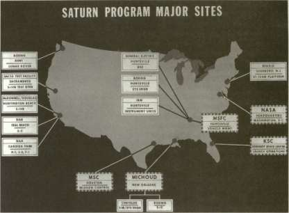
APOLLO SATURN VEHICLE CONTRACTORS
FIRST STAGE (S-IV)
MDC
PRATT & WHITNEY
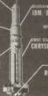
IBM BENOIX
ROCKETDYNE NAR
jl.U. INTEGRATION
IBM
ROCKETDYNE NAR
FIRST STAGE (S-IB)
>HR5T 5TAOE
:::RYSLER
1 v*PACE<
L/MSC
THIRD STAGE iS-IVB!
MDC
^SECOND STAGE 1S-II)
NAR
FIRST STAGE IS-ICi
/-] ENGINE
ROCKETDYNE NAR
SATURN I
SATURN IB
SATURN V
MANAGING SATURN
THE SATURN PROGRAM OFFICE
Effective 1 September 1963, the center director's office (with appropriate staff and functional offices) directed two new operational elements: the Research and Development Operations (R&DO) and Industrial Operations (IO). Both of the new organizations possessed equal operational authority, and both reported directly to von Braun as Director of MSFC. Operations between the two organizations, however, were continuous, and certain elements on the Industrial Operations side had a direct continuous relationship with NASA Headquarters. 17 The new director of R&DO, Herman Weidner, was a long-time member of the von Braun team from the Peenemuende era—a man with whom the other von Braun team veterans could work. The new IO director, on the other hand, came from industry, and reflected lO's contractual and managerial functions. The first IO director was Robert Young, formerly of Aerojet General. He played an interim role for about a year, and was succeeded by General Edmund O'Connor, on leave from the Air Force. 18
Young's decision to accept the job had delighted von Braun. Young seemed to have the managerial talents and industrial know-how that management of the Saturn program demanded. 19 For personal reasons, Young decided to go back to Aerojet, although some insiders at Huntsville thought that he found it somewhat difficult to adjust to Marshall's style of operations. Executives at Young's level still had to clear many decisions through NASA Headquarters, as well as through von Braun's office; managers coming into Marshall from private industry frequently found the additional bureaucratic layers to be irksome. Also these executives soon found that some subordinates at MSFC frequently disagreed with the boss, even in large meetings. To some executives, this bureaucratic democracy could be unsettling. In any case, the appearance of Edmund O'Connor reflected an interesting tendency to bring on board a number of Air Force officers with managerial credentials. Despite its Army heritage, MSFC seemed to favor Air Force personnel in several key positions. They not only had experience in the ways of government bureaucracy, but also had more experience in managing large, complex missile systems, compared to the Army's responsibilities for smaller, artillery-type rockets. 20 In the autumn of 1964, the Air Force transferred 42 field-grade officers to various mid-level management jobs throughout NASA. Experienced in technical program management, these officers were especially versed in configuration, program control, and quality assurance. Marshall Space Flight Center received a dozen Air Force officers, with the rest sent to Houston, Kennedy Space Center, and George Mueller's office at NASA Headquarters. 21
Whether the new MSFC missile managers came from the Army, Air Force, civil service, or private industry, they still had to function within the administrative framework of the 1963 reorganization agreed to by
STAGES TO SATURN
Marshall and NASA Headquarters. At MSFC, the two major components that had to mesh were R&DO and IO.
In essence, the R&DO laboratories were direct descendants of the older technical divisions, and the Industrial Operations elements were modifications of the former Saturn Systems Office. At the heart of the Industrial Operations organization were the three program offices, established for the direct management of the industrial contractors who had responsibility for the Saturn launch vehicles: the Saturn I-IB Office, the Saturn V Office, and the Engines Office. The function of the new Engines Office was to shift responsibility for engine development and production from the laboratories to Industrial Operations, in keeping with the intent of the 1963 reorganization for better management control by means of program and project management. 22
Each program office was set up similar to the Industrial Operations organization, so that each program manager had a cluster of small, dual-purpose staff and functional offices in addition to the project offices for technical management. Some closely structural elements were combined. The Saturn V Program Office, for example, managed the S-IVB stage, used on both the Saturn IB and Saturn V. Similarly, because some engines were used in more than one stage or vehicle, direction of the engine program was more effectively guided from one responsible Engine Program Office.
Arthur Rudolph, head of the Saturn V Program Office, emphasized that the managers of the staff and functional offices were not simply staff but were equal to the project managers for each of the project offices under Rudolph's jurisdiction. The staff and functional offices had multiple roles because they supported not only the program manager but each of the project management offices, and they interacted with NASA Headquarters as well. 23 The staff and functional office managers were known informally in NASA circles as the "GEM Boxes" after George E. Mueller, who headed the Office of Manned Space Flight.
Formal guidance and direction from Headquarters to the centers came down through the Associate Administrator for Manned Space Flight, to the center director, and to the program manager, but daily informal management was accomplished through the GEM Boxes, who provided a "mirror image" between Headquarters and the centers. 24 The GEM Boxes in the centers, identical to those in Mueller's office in Washington, facilitated a daily, and free, flow of information in both directions. "Since like persons were talking at both ends," commented one long-time observer of the system, "confusion and misunderstanding with accompanying loss of time and funds were held to a minimum." The impetus for this aspect of the managerial apparatus primarily came from Mueller. During visits to MSFC, Mueller emphasized to von Braun that the laboratories (R&DO) were going to have to adopt more of a support
MANAGING SATURN
role in the new program management structure, and that better communications with Headquarters through IO were urgently required. Mueller felt that the centers in general were too independent in their relationships with Headquarters and that lack of regular communications was a serious shortcoming. "So I put together this concept of a program office structure, geographically dispersed, but tied with a set of functional staff elements that had intra-communications between program offices that were below center level and below the program office level so as to get some depth of communications," Mueller said. 25
Following the 1963 reorganization, the new program office began to formulate a mode of operations. As head of the Saturn V Program Office, Arthur Rudolph called on considerable managerial expertise in project management of rocket vehicles dating back to the years at Peenemuende, and especially during the ABMA period when he served as project director for the Army's Redstone and Pershing programs. From 1961 through 1963, he had worked at NASA Headquarters, in the Systems Engineering Division of the Office of Manned Space Flight. He had watched the plans for the Saturn V evolve and was aware of such factors as schedules, funds, and performance requirements. 26 He also had specific ideas of how his program was going to run and placed considerable emphasis on what he called program element plans. Rudolph's staff often chafed under the requirements to write up these rather specific documents, which detailed what each office was going to do and how it was going to be accomplished. Most of the skeptics finally came around, however. The program element plans forced people to think about the goals and mechanics of their respective operations and how their operations interacted with the operations of other offices. Even if the authors seldom referred to the documents, they proceeded with greater success because they were forced to analyze the procedures from the start of the project. "I think the major problem is that in a big program like the Saturn V you have many people involved and usually people want to go off on tangents," Rudolph explained. "And the biggest problem is really to get them all to sing from the same sheet of music, to put it in the simple fashion. That's the biggest problem." 27 James T. Murphy, who acted as Rudolph's deputy manager of the management division, summarized the role of his chief: "In its simplest concept, a program manager, with a supporting staff, has been designated to coordinate the efforts of all Government and private industry groups in developing and producing the Saturn V launch vehicle." 28
A major instrument in establishing a managerial approach was the Saturn V program control system plan, originated by Rudolph's office in 1965, and known as Directive No. 9. The objective was to establish a "baseline definition," against which progress could be plotted, problems highlighted, corrective actions taken, and management kept informed.
MSFC SATURN V PROGRAM
OFFICE
OF MANAGER
DR A RUDOLPh
DEPMGR OPNS
J.BRADFORD
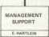
S-IC STAGE PROJECT
S II STAGE PROJECT
R.GODFREY
S-IVBSTAGE PROJECT
INSTRUMENT UNIT PROJECT
VEHICLE GSE PROJECT
I. McCULLOCH IIB)
.SIMMONS IIBI
M.SANDERS
Above, organization of the Saturn V Program Office at Marshall Space Flight Center; below, diagram of George E. Mueller's GEM boxes, showing NASA Headquarters' "mirror image."

Arthur Rudolph, manager of MS PC's Saturn V Program Office.
Directive No. 9 instructed personnel in the Saturn V Program Office to implement the management approach in five major areas:
1. Baseline definition
2. Performance measurement and analysis
3. Problem resolution
4. Management reporting system
5. Program control center
The baseline definition was primarily geared to matters of cost, schedules, and performance, and was achieved through program elements such as logistics, finance, and testing. The program elements comprising the baseline definition were under the control of the staff/functional offices known as the GEM Boxes: 29
• Program Control Office: Primarily responsible for costs and budgets, progress reports, and logistics, including manpower and facility requirements, scheduling and contracts, and configuration management.
• Systems Engineering Office: Responsible for mission description, overall systems specifications, and systems description.
• Test Office: Charged with test planning, performance, coordination and standards, and for the establishment of checkout requirements and coordination.
STAGES TO SATURN
• Reliability and Quality Office: Responsible for establishing and maintaining reliability and quality standards, including contractual requirements, compilation of statistics, and failure reports.
• Flight Operations Office: Charged with assuring that all flight hardware was ready for manned flight operations, including the establishment of necessary requirements, plans, and coordination.
INTERFACES AND INTER-CENTER COORDINATION
The interfaces to be controlled throughout the Saturn program, such as those between stages, between the payload and the vehicle, and between the vehicle and the launch facilities, seemed limitless. With contractors and three major NASA centers in the Apollo-Saturn program, the interface problems covered physical, functional, and procedural areas, and these problems often became intertwined. The necessary documentation included both drawings and written directives to establish basic responsibilities as well as the limits of responsibilities for the parties involved. Once established, such documentation could not be altered unless all parties came to agreement on terms.
The interface aspects were established at the beginning of the Saturn V program with collaboration of appropriate inter-center coordination panels, working groups within MSFC, contractor advice, and a strong input from the R&DO laboratories at MSFC. 30 When a contractor originated an engineering change proposal against the current configuration, he knew in advance the impact on other equipment and organizations, since the interface documents were already drawn up. Contractors had the opportunity to coordinate possible changes ahead of time by notifying related personnel of the time of the change and its ramifications.
Difficulties often cropped up during the process of interfacing various stages of the launch vehicle, spacecraft, related equipment and systems, and the various centers. To maintain configuration control, a group of inter-center coordination panels was established to resolve the interface problems. Technical personnel were appointed from the centers and from other NASA agencies. The formal communications media between panel members involved the interface control documents. The documents were divided into two levels: level A documented technical interfaces between the centers and level B did the same for hardware supplied by the NASA contractors. If the change concerned a single stage and involved no other interfaces, then the proposal could go through a change board at the project level at MSFC. If the change affected the interface with hardware on a different stage, it had to go to the program level (level B). If the change affected the program of a different NASA center, it was necessary to go through the inter-center coordination panel
MANAGING SATURN
to reach a decision (level A). In situations where the panel could not reach a decision, an executive group, the Panel Review Board, supervised and adjudicated the issues as necessary. The Board was chaired by the Apollo Program Director at NASA Headquarters and channeled its decisions back through the appropriate centers and program offices. 31
Within MSFC itself, there were a number of "working groups" that originated early in the Saturn program to cope with various development problems that had cropped up. These groups became the acknowledged elements to work on the various interface problems concerning Huntsville's work on the Saturn program. The working groups were originally created in 1960 by Oswald Lange, who at that time headed the Saturn Systems Office, "to make available the experience of MSFC and contractor representatives toward the solution of stage interface and system problems." The purpose of the groups was not to deemphasize the responsibilities of other MSFC organizations or those of the contractor, but to monitor special areas and make informed, incisive recommendations through appropriate channels. The number of such working groups varied from time to time, with each group chaired by a senior technical authority from one of the laboratories, and including representatives from the appropriate program offices. Group recommendations were channeled through the Program Office Configuration Control Boards. 32
To gauge the status of the program and to assess its progress, hundreds of MSFC personnel engaged in various levels of daily, weekly, and monthly staff meetings. Although informal contact between Saturn V Program Office personnel and contractor personnel occurred daily, in addition to recurring visits to contractor plants, the most important formal meeting was the Contractor Quarterly Project Review beginning in late 1964. In these meetings, contractor and MSFC managers reviewed not only the technical status of the project, but also the management status. In the meantime, the Saturn V program manager's office customarily held various staff meetings with each of the project managers in Huntsville, and also conducted a more elaborate monthly Saturn V Program Review with all of the project offices involved. These sessions, begun early in 1965, kept the program manager fully informed and provided an additional forum to cope with related problems. Rudolph did not like frequent staff meetings. Instead he liked to have fewer meetings in which the programs were discussed and analyzed in depth, leaving the management burden in the interim primarily on the shoulders of his project offices. This meant that the monthly sessions were very long indeed, and one of the standard jokes in Rudolph's office involved bleary-eyed project managers, in the early morning hours, dropping notes out of office windows: "Help me—I'm in a Rudolph meeting!"
These monthly sessions helped to generate information for the Management Council meetings for the Office of Manned Space Flight
STAGES TO SATURN
(OMSF), convened by the Associate Administrator at NASA Headquarters each month, or as required. For these meetings, the program managers and other designated personnel accompanied the MSFC director and participated in analyzing problems and progress, while at the same time receiving Headquarters information on policy changes and various program directives. The format was usually concerned with four main issues. 3
1. Where did the money go and can we manage within the allotted funds remaining?
2. What preplanned tasks have been accomplished and can we meet the projected schedule?
3. What are our major technical and programmatic problems and what previously unforeseen actions must be taken to overcome them?
4. What are our major motivational problems?
In addition, two other top-level meetings were customary in the Saturn program, one within NASA management and one that included the contractors. OMSF conducted an annual Apollo-Saturn program review attended by NASA Administrator Webb and selected staff. The center directors attended, and formal presentations were made by designated senior executives from the centers. These annual reviews gave the Administrator a comprehensive and critical analysis of contractor and program performance over the past year, with projections for the year ahead. As required, George Mueller occasionally convened what he called the Apollo Executive Group. This group involved the chief executives of the contractors in the Apollo-Saturn program. They met at various major contractor sites for briefings and visited each of the major NASA centers. Mueller said that without the Apollo Executive Group, "we would not have been able to succeed—it was one of the things that made it possible to succeed." All of the chief executives became aware of the problems and possibilities, and felt involved in the program. The meetings also gave NASA and the centers "top level interest and support." 3
At a different level, the Saturn program used a technical review system to ensure that development, design, fabrication, and test activities for each stage were properly evaluated. These reviews, such as critical design reviews and flight reviews, were attended by senior technical experts and top management.
RELATIONSHIPS WITH THE CONTRACTOR
Aside from the various communications, visits to the contractor facilities, and quarterly reviews with the contractors, the Saturn V Program Office had immediate representation at major contractor plants
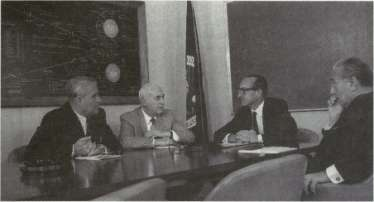
NASA Office of Manned Space Flight Management Council: the principals, George E. Mueller (third from left), Associate Administrator for Manned Space Flight and chairman, with manned space flight center directors Wernher von Braun (MSFC), Robert R. Gilruth (MSC), and Kurt H. Debus (KSC).
in the form of the Resident Manager's Office (RMO), which consisted of the head of each office. At each location, the RMO operated as a "mirror image" of the respective project manager back in Huntsville. The RMO was directly responsible to the project manager, and communicated with him daily. Each RMO had a small staff of technical and contractual personnel from MSFC and, as the primary liaison between MSFC and the contractor, exercised a reasonable amount of authority. 35
Since the role of the RMO was to expedite decisions, a small cadre of specialists was "to assure that project management interests were advanced and that decisions were made and implemented within the designated scope of authority of the resident group." Guidelines supplied to the RMO allowed him to make certain on-the-spot decisions with the backing of his staff. These decisions included making commitments in behalf of other offices and/or functions of the center. "This resident element proved to be a most important link between government and contractor activities in the management of large programs." In MSFC's opinion, the process of management was accelerated as a result of this on-site authority, and provided a "dynamic interface" between MSFC and the contractor. 36
Eberhard Rees admitted that the surveillance of contractor operations, as well as their management, was "somewhat sensitive from the point of view of the contractor." In many instances, contractors felt that
STAGES TO SATURN
they should be allowed to go their own way after the contract was signed. 37 The longing for more freedom of action was evidently a legacy of the experience that most Saturn contractors had previously had with Air Force contracts. Huntsville had great technical competence; at certain managerial levels of design and manufacturing, grumped one highly placed contractor executive, Marshall maintained a one-on-one surveillance. The Air Force, he said somewhat wistfully, was "not in your pants all the time." 3 } But Rees maintained that loose reins on the contractor had not always worked out well from the MSFC point of view. "Consequently," he said, "it became clear that close and continuous surveillance of the contractor operation was required on an almost day-to-day basis." The extent of the surveillance was proportional to the subtleties and problems of the program, its relative position in relation to the existing state of the art, and the extent of expertise possessed by MSFC. The contractor's reaction to this aspect of NASA monitoring was not favorable at first, but eventually this "penetration and monitoring" was perceived to be a mutual benefit characterized by the often repeated phrase, the "government-industry team." "Contractor penetration" was an important concept that ultimately involved the contractor's relationship with his own subcontractors. 39
One of the most interesting aspects of contractor penetration was the RMO approach. NASA could exert considerable influence on technical decisions that affected the managerial organization of the contractors. General Samuel C. Phillips, who directed the Apollo Program Office at NASA Headquarters, revealed this leverage during one of the program review sessions held at NASA Headquarters in 1964. He noted that various contractors had strengthened their organizations during the preceding year, "either on their own or due to appropriate influence by NASA." 40
Phillips's comment on the use of appropriate influence was an
understatement, since MSFC could, and did, force contractors to change their modes of operation. In 1963, the development of the S-IVB was in its dual role as the second stage of the Saturn IB vehicle and as the third stage of the Saturn V. This duality posed something of a problem of interfacing for the S-IVB prime contractor, Douglas Aircraft Company. Discussing the S-IVB project during the 1964 program review, Lee James pointed out that MSFC management wanted to make sure that Douglas did "not see two faces at Marshall. It is important they see only one." As far as the contractor was concerned, the Saturn IB/S-IVB manager acted as deputy to the Saturn V/S-IVB stage manager, placing basic responsibility in the Saturn V Program Office. 41
During his presentation, James spoke on the subject of "Saturn I/IB Launch Vehicles and Related Facilities," in which he noted that management constituted a "major part of the problem." Moreover, he continued, "a major part of that problem was considered to be with Douglas."
MSFC/CONTRACTOR RELATIONSHIPS
R & O OPERATIONS
I.O. DIRECTOR
REQUESTS SUPPORT
PROGRAM MANAGER
STAGE MANAGER
DAY-TO-DAY PROGRAM D RECTION
TECHNICAL LABORATORY SUPPORT
RESIDENT MANAGER
ENGINEERS AND ADMINISTRATIVE
RECOMMENDAT.ONS
REQUESTS FOR TECHNICAL ACTION
PRIME CONTRACTOR
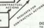
WOO
DOD & WOO FURNISH TO PRIME & SUBCONTRACTORS SECONDARY CONTRACT ADMIN. ISTRATION SERVICES, AUDITING INSPECTION. PRICE ANALYSIS AND PROPERTY ACCOUNTING
SUB CONTRACTORS
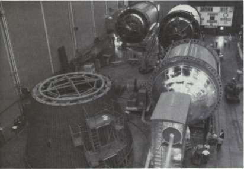
NASA's Manned Flight Awareness program made its mark in all major contractor operations (see diagram). This scene is in the Douglas plant; S-IVB stages are being fabricated and assembled under the banner on the far wall, "Saturn VIP," which in Douglas stood for their "Very Important People" who had made safety or quality assurance contributions.
STAGES TO SATURN
Douglas had never set up a project-oriented organization, James explained, and the management structure in operation never worked very well in any case. The crux of the difficulty seemed to be the company's Sacramento Test Facility (SACTO), set up as a part of the engineering manufacturing divisions, with ties to both Santa Monica and Huntington Beach. As a result, James said, there was no place "to pull their organization together" to make sure programs like the battleship test and the all-systems test evolved smoothly and logically. Management at MSFC stepped in to remedy the situation. James put it bluntly: "We forced Douglas to reorganize Sacramento into a separate entity." As a result, SACTO reported directly to the upper echelons of Douglas management, and MSFC was involved in the reassignment of Douglas's Deputy Director of the Saturn Program to the new position of Director of Sacramento Test Operations, a further benefit to the reorganization. To enable MSFC to operate from a stronger posture at Douglas, the office of the Resident Manager was strengthened, and a new person was brought in for the job. James said that over 90 applications for the position had been received, and he was pleased to report that "a very strong individual" had been chosen. In fact, the successful applicant was so eager to shoulder the responsibilities that he took a salary cut of $8500. "I think we have found just the man we are looking for in order to give us the strength on the spot that we need," James concluded. 42
The policy of contractor penetration did not imply relentless meddling in the internal affairs or organization of the company. Indeed, most of the pressure applied by MSFC seemed to occur early in the program. Monitoring continued, but on a lesser scale. The initial problems were peculiar to the complicated requirements of getting "cranked up" for a new program such as S-IVB battleship testing, where MSFC, Douglas, and Rocketdyne (the engine contractor) were all involved. MSFC formulated a "start team" that used personnel from all three organizations. This special group coordinated and channeled early activities, and proved to be a successful approach in the S-IVB program. As the program gained momentum, the contractor assumed more responsibility. "We also recognized in the S-IVB program that Douglas is a major manufacturing organization and once they get rolling, they are a good organization," said James emphatically. "Our problem always is on the initial stages. We have made a major effort to concentrate on getting the first stage out the door, knowing we can trust a contractor like Douglas to follow on with the succeeding stages." 4
The technique of contractor penetration to maintain high visibility obviously generated some thorny issues in government-contractor relations. Nevertheless, MSFC felt that industry had a strong inclination to take control of the job and the funding and pursue the job with a minimum of government intervention. MSFC management believed this inclination allowed too much opportunity for slippage, unidentified
MANAGING SATURN
problems, and poor communications. Vigorous contractor penetration reduced these program difficulties; in the long run, the contractors seemed inclined to accept the penetration as a mutually useful aspect of completing a successful program. "The restiveness that stemmed from such close control was gradually dissipated very early in the Apollo program as the benefit accruing from the industry-government team approach was revealed," concluded Eberhard Rees.
Realizing the relationship between contractor motivation and success, the Saturn V Program Office implemented general NASA policy regarding contract incentives as a means of encouraging the contractor to perform at the highest possible level of endeavor. Most of the original contracts stipulated a cost-plus-fixed fee, useful in the early phases of a program when management had to deal with many unknown factors and close pricing was uncertain. After the R&D phase was well in hand and the unknowns were worked out, it became possible to adapt incentive- or award-fee provisions in all Saturn contracts except the S-II stage contract. The S-II contract eventually had limited award-fee provisions for management performance. The contracts for the lunar roving vehicle and the instrument unit were cost-plus-incentive fee (CPIF) from their initiation. The remaining contracts were changed in 1966 from cost-plus-fixed fee to cost-plus-incentive fee.
The incentive contracts were established in two portions: a comparatively modest base fee, and a segment of payments scaled to incentives. These scaled incentive fees were awarded in proportion to the contractor's success in meeting time schedules, cost allowances, and performance ranges. The incentive fee contract was judged to be most successful in cases involving hardware contracts where schedules, costs, and major milestones were fairly well established. The Saturn V Program Office considered the approach a successful alternative to fixed-fee contracts, because the incentive-fee contracts encouraged the contractor to meet commitments on hardware delivery and contributed to mission success. 45
RELIABILITY AND QUALITY CONTROL
Within the Saturn V Program Office, as in other MSFC operations, management paid special attention to the areas of reliability and quality control. The project offices viewed reliability as a significant element of basic design technique, and continued relevant procedures for judging the design of subsystems, components, and parts, as well as the overall stage design. This approach included techniques to evaluate the necessity for redundancy, criticality of numbers, and failure mode and effects analysis. Management also pursued an exceedingly active qualification test program, exposing components and subsystems to simulated flight loads under environmental conditions. This test was a major contributive
STAGES TO SATURN
factor to the success of the Apollo-Saturn program, although it was expensive. The hardware was costly, and rigorous testing of such a large portion of it meant that much of the hardware could not be used later as flight hardware. In some cases where funds were particularly tight, qualification tests were conducted at a reduced level, followed by intensive and exhaustive data analyses to extrapolate performance through various conditions of flight. The object was to be able to use such hardware on actual missions later on. In these instances, it was necessary to be careful not to overstress these future flight components, and to extrapolate data so as to avoid risks during the actual missions. 46
The problem of quality control was further affected by MSFC's reliance on the Department of Defense, which exercised quality control management in some of the contractor plants. In the mid-1960s, MSFC made an effort to increase its own quality control programs, particularly in the inspection of incoming vendor surveillance. Douglas, for example, evolved its own approved parts list; parts not listed were unacceptable in design specifications submitted by prospective vendors. Basic guidelines for the list came from MSFC documents, buttressed by information from the military, industry sources, and Douglas's own experience, and were substantiated by operational and test data in the course of the program. The approved parts list included such items as bearings, fasteners, switches, relays, transformers, wires and cables, capacitors, resistors, semiconductors, and fluid fittings. Among the tangle of parts required to make a rocket work, the pipes and tubing with their respective connections were expected to operate under extreme and rapid temperature change, shocks, low pressure, and intense vibration. All parts had to be flight weight and have the imprimatur of the approved parts list. 47
The Saturn V Program Office continued to monitor the activities of its own prime contractors, stepping in when necessary to advise changes. One such instance occurred in July 1964, when one of the welds of the S-IVB stage failed and the consequent rupture of the tankage caused the loss of the entire structural test stage. As a result of this incident, MSFC "caused Douglas to go into TIG welding with the higher heat input than the MIG welding that they were using in certain areas." MSFC technical personnel reported higher reliability after the change, and approved Douglas's revision of weld inspection procedures, which MSFC judged to have been somewhat weak. 48
In pursuing reliability and quality control, the project managers found that they had to exercise considerable diplomatic tact, making sure that the contractor had sufficient leeway to develop valid design concepts without overdoing it. "It is in the nature of experts that they become beguiled by intriguing technological problems," warned Eberhard Rees, and such beguilement could lead to excessive pursuit of reliability and performance. This situation was sometimes tolerable in industry, in the interest of better products for competition, but not in the space program.
MANAGING SATURN
It was necessary to be constantly on guard against losing simplicity—easy to do in the early stages of a program that was complex, large, and pressed by tight schedules. "Even when weighed in the balance against sacrifice of performance, design simplicity should be strongly favored," Rees recommended, because more components and higher performance often increased the prospects for failure. Rees noted that "Project management has here a rather complicated task of putting the brakes on these tendencies without discouraging development of new technology and with it of highly inventive people." Arthur Rudolph was adamant about this point, and put it even more succinctly: "Make it simple, make it
i i • • i m4Q
simple, make it simple!
In the quest for high performance, reliability, and quality control, incentive contracts constituted only one of a number of blandishments. Several techniques were employed by MSFC, including cash awards and special recognition for quality control, cost reduction, and other activities. At MSFC, the Saturn V Program Office cooperated with the Manned Flight Awareness Office in a program to inform and remind all workers in the Apollo-Saturn program about the importance of their work and the need for individual efforts. By means of awards and recognition programs, the Manned Flight Awareness concept became an effective incentive technique. The prime contractors also conducted special incentive programs, in collaboration with the project managers and RMO personnel. North American's program was known as PRIDE (Personal Responsibility in Daily Effort), and Douglas had its "V.I.P." campaign (Value in Performance). MSFC's Manned Flight Awareness personnel and the contractors also participated in a program to make sure that vendors and subcontractors shipped critical spare hardware in special containers and boxes. These boxes were marked with stickers and placards imprinted with reminders to handle with particular care, because the hardware was important to the astronauts whose lives depended on the integrity of the hardware. 50
THE PROGRAM CONTROL CENTER
The Saturn V Program Office relied on a facility known as the Program Control Center as a focus for decision-making. The nature of the Saturn program, with contractors and NASA facilities scattered from coast to coast, presented a real challenge in codifying information for managerial decisions. As one Saturn V Program Office manager said, it was "essential that we had some way of making sure that we had pulled together all the facets of the program into an integrated program with good visibility. And that, I would say, has been probably the main purpose of this Program Control Center—to try to provide the program manager with that integrated visibility." 5
STAGES TO SATURN
The archetype of the Program Control Center was probably the "Management Center," developed in 1956 for the use of Rear Admiral William F. Raborn, Jr., during the Polaris program. To get ideas for Raborn's Management Center room, his personnel visited the Air Force Ballistic Missile Division in Inglewood, California, and, interestingly, the ABMA operation in Huntsville. The Polaris center was designed to avoid the look of a boardroom and was filled with 90 chairs facing a large motion-picture and slide screen in the front, and numerous charts hung on the walls around the room. The idea was to provide maximum visual capability of Polaris events in a briefing room. 52 The Boeing Company elaborated this concept as a management tool during its Minuteman missile program for the Air Force. Beginning in 1959, a series of Boeing control rooms resulted in a style of visual presentations, by means of charts and audio-visual aids, intended to reduce the reams of management reports being used to monitor the progress of the program. The company activated such a control room at its S-IC (the Saturn V first stage) manufacturing facility at Michoud, near New Orleans, Louisiana, in 1964. In 1965, Boeing was awarded a contract by MSFC to develop an advanced control room management facility at Huntsville. 53 This became the Program Control Center (PCC) of Rudolph's Saturn V Program Office. Although the Marshall center's PCC looked somewhat like a boardroom, it became an unusually active facility. The conference table in the center of the room seated 14, and the movable chairs around the edges of the room raised its capacity to several dozen.
The PCC epitomized the managerial concepts of "management by exception" and "single threading." The technique of management by exception was based on the premise that the program manager should keep his number of contacts within manageable limits, and Arthur Rudolph relied heavily on his project managers to work with the contractors and solve various problems as they arose. "Within my Saturn V Program Office," Rudolph explained, "each project manager has wide latitude to exercise management actions just as long as these actions meet established technical performance requirements and schedule and budget constraints." Rudolph's control over the project managers went just far enough to ensure that performance, schedule, and budget guidelines were met, that interfaces were kept in repair, and that unintended redundancy was eliminated. "This policy of management by exception has enabled us to operate effectively and efficiently and has given my people the incentive to perform to their fullest capabilities," he said. 54
The PCC needed to develop a means of singling out special problems for more detailed analysis, including probable program impact, and to know exactly who was responsible for monitoring and solving problems. The concept of "single threading" provided graphic documentation for tracing a problem to a detailed position for assessment and determining a probable course of action to resolve it. 55 The means for
MANAGING SATURN
such analysis were embodied in the data organized for viewing in the PCC. Thus, the PCC was an arena for comprehensive displays for use by management—a focal point for collection and presentation of information concerning the status of the Saturn V program, and planned so as to provide displays for various levels of detail. This approach permitted managers to identify the problem, begin action for resolution, and monitor progress.
The PCC for the Saturn V Program Office was one of a network of such rooms located in the Apollo Program Director's office at Headquarters, at each of the three Apollo-Saturn NASA centers (Kennedy, Marshall, and Houston), at each of the prime contractors' offices, and at Mississippi Test Facility. The network allowed top management and other personnel to keep up with a myriad of activities, including logistics, astronaut training, scientific projects, selection of lunar landing sites, the worldwide tracking network, mission planning, and the mission itself. Each had the latest information and up-to-date displays for its appropriate job, including general Apollo-Saturn program information as required, along with a sophisticated communications system to accelerate the decision-making process. 56